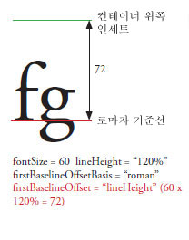
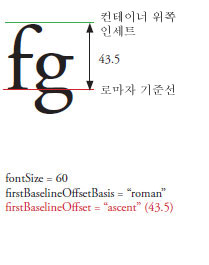
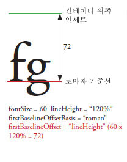
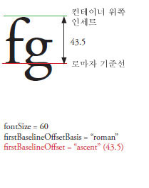

| 패키지 | fl.text |
| 클래스 | public class TLFTextField |
| 상속 | TLFTextField |
| 언어 버전: | ActionScript 3.0 |
| 제품 버전: | Flash CS5 |
| 런타임 버전: | Flash Player 10, AIR 1.5 |
TextField 클래스의 텍스트 필드를 만들 때와 같은 방법으로 TLFTextField 객체를 만듭니다. 그런 다음, textFlow 속성을 사용하여 TLF 클래스로부터 향상된 서식 지정 옵션 및 기능을 지정합니다. 예를 들면 다음과 같습니다.
import fl.text.TLFTextField; import flashx.textLayout.formats.TextLayoutFormat; import flashx.textLayout.elements.TextFlow; var myTLFTextField:TLFTextField = new TLFTextField(); addChild(myTLFTextField); myTLFTextField.x = 10; myTLFTextField.y = 10; myTLFTextField.width = 200 myTLFTextField.height = 100; myTLFTextField.text = "This is my text"; var myFormat:TextLayoutFormat = new TextLayoutFormat(); myFormat.textIndent = 8; myFormat.color = 0x336633; myFormat.fontFamily = "Arial, Helvetica, _sans"; myFormat.fontSize = 24; var myTextFlow:TextFlow = myTLFTextField.textFlow; myTextFlow.hostFormat = myFormat; myTextFlow.flowComposer.updateAllControllers();
관련 API 요소
 상속되는 공용 속성 숨기기
상속되는 공용 속성 숨기기 상속되는 공용 속성 표시
상속되는 공용 속성 표시| 속성 | 정의 주체 | ||
|---|---|---|---|
 | accessibilityImplementation : AccessibilityImplementation
이 InteractiveObject 인스턴스에 대한 현재 액세스 가능성 구현(AccessibilityImplementation)입니다. | InteractiveObject | |
| accessibilityProperties : AccessibilityProperties
이 표시 객체의 현재 액세스 가능성 옵션입니다. | DisplayObject | |
| alpha : Number
지정된 객체의 알파 투명도 값을 나타냅니다. | DisplayObject | |
| alwaysShowSelection : Boolean
true로 설정하면 텍스트 필드에 포커스가 없는 경우 Flash Player에서 텍스트 필드의 선택 영역이 연한 파랑으로 강조 표시됩니다. | TLFTextField | ||
| antiAliasType : String
이 텍스트 필드에 사용되는 앤티앨리어싱 유형입니다. | TLFTextField | ||
| autoSize : String
텍스트 필드의 자동 크기 조절 및 정렬을 제어합니다. | TLFTextField | ||
| background : Boolean
텍스트 필드에 배경 칠이 있는지 여부를 지정합니다. | TLFTextField | ||
| backgroundAlpha : Number
텍스트 필드 배경의 알파 값을 지정합니다. | TLFTextField | ||
| backgroundColor : uint
텍스트 필드 배경의 색상을 지정합니다. | TLFTextField | ||
| blendMode : String
사용할 블렌드 모드를 지정하는 BlendMode 클래스 값입니다. | DisplayObject | |
| blendShader : Shader [쓰기 전용]
전경 및 배경을 블렌딩하는 데 사용되는 셰이더를 설정합니다. | DisplayObject | |
| blockProgression : Object
줄 배치를 수직으로 할지 또는 수평으로 할지를 지정합니다. | TLFTextField | ||
| border : Boolean
텍스트 필드에 테두리가 있는지 여부를 지정합니다. | TLFTextField | ||
| borderAlpha : Number
테두리의 알파 값을 지정합니다. | TLFTextField | ||
| borderColor : uint
텍스트 필드 테두리의 색상을 지정합니다. | TLFTextField | ||
| borderWidth : Number
테두리의 폭을 지정합니다. | TLFTextField | ||
| bottomScrollV : int [읽기 전용]
지정된 텍스트 필드에서 현재 맨 아래에 표시되는 행을 나타내는 정수 인덱스(1부터 시작)입니다. | TLFTextField | ||
| buttonMode : Boolean
이 Sprite의 버튼 모드를 지정합니다. | Sprite | |
| cacheAsBitmap : Boolean
true로 설정된 경우 Flash 런타임은 표시 객체의 내부 비트맵 표현을 캐시합니다. | DisplayObject | |
| cacheAsBitmapMatrix : Matrix
null이 아닌 경우 이 Matrix 객체는 cacheAsBitmap이 true로 설정될 때 표시 객체가 렌더링되는 방법을 정의합니다. | DisplayObject | |
| caretIndex : int [읽기 전용]
삽입점(캐럿) 위치의 인덱스입니다. | TLFTextField | ||
| columnCount : Object
텍스트의 열 수입니다. 겹쳐 놓기 동안 undefined인 경우 기본값이 사용됩니다. | TLFTextField | ||
| columnGap : Object
열 사이에 남겨 놓을 사이 간격의 양(픽셀 단위)을 지정합니다. 겹쳐 놓기 동안 undefined인 경우 기본값이 사용됩니다. | TLFTextField | ||
| columnWidth : Object
열의 폭(픽셀 단위)입니다. 겹쳐 놓기 동안 undefined인 경우 기본값이 사용됩니다. | TLFTextField | ||
| condenseWhite : Boolean
HTML 텍스트 또는 TLF 마크업이 있는 텍스트 필드에서 공백 문자, 줄 바꿈 등의 불필요한 공백을 제거할지 여부를 지정하는 부울 값입니다. | TLFTextField | ||
| constructor : Object
지정된 객체 인스턴스의 클래스 객체 또는 생성자 함수에 대한 참조입니다. | Object | |
| contextMenu : NativeMenu
이 객체에 연결된 컨텍스트 메뉴를 지정합니다. | InteractiveObject | |
| defaultTextFormat : flash.text:TextFormat
replaceSelectedText() 메서드로 삽입한 텍스트 또는 사용자가 입력한 텍스트 등 새로 삽입되는 텍스트에 적용할 서식을 지정합니다. | TLFTextField | ||
| direction : String
텍스트 블록에 있는 텍스트의 기본 양방향 포함 수준을 지정합니다. | TLFTextField | ||
| displayAsPassword : Boolean
텍스트 필드가 암호 텍스트 필드인지 여부를 지정합니다. | TLFTextField | ||
| doubleClickEnabled : Boolean
이 객체에서 doubleClick 이벤트를 받을지 여부를 지정합니다. | InteractiveObject | |
| dropTarget : DisplayObject [읽기 전용]
드래그하는 Sprite 아래의 표시 객체 또는 Sprite를 드래그해 놓은 표시 객체를 지정합니다. | Sprite | |
| embedFonts : Boolean
포함된 글꼴 외곽선을 사용하여 렌더링할지 여부를 지정합니다. | TLFTextField | ||
| filters : Array
현재 표시 객체와 연관된 각 필터 객체가 들어 있는 인덱싱된 배열입니다. | DisplayObject | |
| firstBaselineOffset : Object
컨테이너의 첫 번째 줄의 기준선 위치를 지정합니다. | TLFTextField | ||
| focusRect : Object
이 객체에서 포커스 사각형을 표시할지 여부를 지정합니다. | InteractiveObject | |
| graphics : Graphics [읽기 전용]
벡터 드로잉 명령을 내릴 수 있는 이 Sprite에 속한 Graphics 객체를 지정합니다. | Sprite | |
| gridFitType : String
이 텍스트 필드에 사용되는 격자 맞춤의 유형입니다. | TLFTextField | ||
| height : Number
표시 객체의 높이를 픽셀 단위로 나타냅니다. | DisplayObject | |
| hitArea : Sprite
Sprite의 히트 영역으로 사용할 다른 Sprite를 지정합니다. | Sprite | |
| htmlText : String
텍스트 필드 내용의 HTML 표현이 들어 있습니다. | TLFTextField | ||
| length : int [읽기 전용]
텍스트 필드의 문자 수입니다. | TLFTextField | ||
| loaderInfo : LoaderInfo [읽기 전용]
이 표시 객체가 속한 파일의 로딩 정보가 포함된 LoaderInfo 객체를 반환합니다. | DisplayObject | |
| mask : DisplayObject
호출하는 표시 객체는 지정된 mask 객체에 의해 마스크 처리됩니다. | DisplayObject | |
| maxChars : int
사용자가 입력하여 텍스트 필드에 포함될 수 있는 최대 문자 수입니다. | TLFTextField | ||
| maxScrollH : int [읽기 전용]
scrollH의 최대값입니다. | TLFTextField | ||
| maxScrollV : int [읽기 전용]
scrollV의 최대값입니다. | TLFTextField | ||
| metaData : Object
PlaceObject4 태그를 통해 SWF 파일에 해당 DisplayObject의 인스턴스와 함께 메타데이터가 저장된 경우 DisplayObject 인스턴스의 메타데이터 객체를 가져옵니다. | DisplayObject | |
| mouseChildren : Boolean
해당 객체의 자식에서 마우스 또는 사용자 입력 장치가 사용하도록 설정되어 있는지 여부를 결정합니다. | DisplayObjectContainer | |
| mouseEnabled : Boolean
이 객체가 마우스 또는 기타 사용자 입력, 메시지를 수신할지 여부를 지정합니다. | InteractiveObject | |
| mouseWheelEnabled : Boolean
사용자가 텍스트 필드를 클릭하고 마우스 휠을 굴릴 때 여러 줄 텍스트 필드가 자동으로 스크롤되는지 여부를 나타내는 부울 값입니다. | TLFTextField | ||
| mouseX : Number [읽기 전용]
마우스 또는 사용자 입력 장치 위치의 x 좌표를 픽셀로 나타냅니다. | DisplayObject | |
| mouseY : Number [읽기 전용]
마우스 또는 사용자 입력 장치 위치의 y 좌표를 픽셀로 나타냅니다. | DisplayObject | |
| multiline : Boolean
텍스트 필드가 여러 행 텍스트 필드인지 여부를 나타냅니다. | TLFTextField | ||
| name : String
DisplayObject의 인스턴스 이름을 나타냅니다. | DisplayObject | |
| needsSoftKeyboard : Boolean
이 InteractiveObject 인스턴스가 포커스를 받을 때 가상 키보드(화면의 소프트웨어 키보드)를 표시할지 여부를 지정합니다. | InteractiveObject | |
| numChildren : int [읽기 전용]
이 객체의 자식 수를 반환합니다. | DisplayObjectContainer | |
| numLines : int [읽기 전용]
여러 행 텍스트 필드의 텍스트 행 수를 정의합니다. | TLFTextField | ||
| opaqueBackground : Object
표시 객체를 특정 배경색으로 불투명하게 처리할지 여부를 지정합니다. | DisplayObject | |
| paddingBottom : Object
아래쪽 인세트(픽셀 단위)입니다. 겹쳐 놓기 동안 undefined인 경우 기본값이 사용됩니다. | TLFTextField | ||
| paddingLeft : Object
왼쪽 인세트(픽셀 단위)입니다. 겹쳐 놓기 동안 undefined인 경우 기본값이 사용됩니다. | TLFTextField | ||
| paddingRight : Object
오른쪽 인세트(픽셀 단위)입니다. 겹쳐 놓기 동안 undefined인 경우 기본값이 사용됩니다. | TLFTextField | ||
| paddingTop : Object
위쪽 인세트(픽셀 단위)입니다. 겹쳐 놓기 동안 undefined인 경우 기본값이 사용됩니다. | TLFTextField | ||
| parent : DisplayObjectContainer [읽기 전용]
이 표시 객체가 포함된 DisplayObjectContainer 객체를 나타냅니다. | DisplayObject | |
| pixelMaxScrollV : int [읽기 전용]
pixelScrollV의 최대값입니다. | TLFTextField | ||
| pixelScrollV : int
텍스트 필드에서 텍스트의 세로 위치이며, 선을 기준으로 하는 scrollV와 달리 픽셀 단위로 지정합니다. | TLFTextField | ||
| restrict : String
사용자가 텍스트 필드에 입력할 수 있는 문자 세트를 나타냅니다. | TLFTextField | ||
| root : DisplayObject [읽기 전용]
로드된 SWF 파일에 있는 표시 객체의 경우, 해당 SWF 파일이 나타내는 표시 목록의 트리 구조 부분에서 맨 위에 위치하는 표시 객체가 루트 속성이 됩니다. | DisplayObject | |
| rotation : Number
DisplayObject 인스턴스가 원점으로부터 회전한 각도입니다. | DisplayObject | |
| rotationX : Number
DisplayObject 인스턴스가 3D parent 컨테이너를 기준으로 원점으로부터 x축 회전한 각도를 나타냅니다. | DisplayObject | |
| rotationY : Number
DisplayObject 인스턴스가 3D parent 컨테이너를 기준으로 원점으로부터 y축 회전한 각도를 나타냅니다. | DisplayObject | |
| rotationZ : Number
DisplayObject 인스턴스가 3D parent 컨테이너를 기준으로 원점으로부터 z축 회전한 각도를 나타냅니다. | DisplayObject | |
| scale9Grid : Rectangle
현재 적용 중인 크기 조절 격자입니다. | DisplayObject | |
| scaleX : Number
등록 포인트에서 적용된 객체의 가로 크기(백분율)를 나타냅니다. | DisplayObject | |
| scaleY : Number
객체의 등록 포인트에서 적용된 객체의 세로 크기(백분율)를 나타냅니다. | DisplayObject | |
| scaleZ : Number
객체의 등록 포인트에서 적용된 객체의 깊이 크기(백분율)를 나타냅니다. | DisplayObject | |
| scrollH : int
현재 가로 스크롤 위치입니다. | TLFTextField | ||
| scrollRect : Rectangle
표시 객체의 스크롤 사각형 경계입니다. | DisplayObject | |
| scrollV : int
텍스트 필드에서 텍스트의 수직 위치입니다. | TLFTextField | ||
| selectable : Boolean
텍스트 필드를 선택할 수 있는지 여부를 나타내는 부울 값입니다. | TLFTextField | ||
| selectionBeginIndex : int [읽기 전용]
현재 선택 영역에 있는 첫 문자의 문자 인덱스 값(0부터 시작)입니다. | TLFTextField | ||
| selectionEndIndex : int [읽기 전용]
현재 선택 영역에 있는 마지막 문자의 문자 인덱스 값(0부터 시작)입니다. | TLFTextField | ||
| sharpness : Number
TLF TextField에는 선명도가 해당되지 않습니다. | TLFTextField | ||
| softKeyboard : String
소프트 키보드의 모양을 제어합니다. | InteractiveObject | |
| softKeyboardInputAreaOfInterest : Rectangle
소프트 키보드가 표시될 때 화면에서 그대로 유지되는 영역을 정의합니다(iOS에서는 사용할 수 없음). | InteractiveObject | |
| soundTransform : flash.media:SoundTransform
이 Sprite 내에서 사운드를 제어합니다. | Sprite | |
| stage : Stage [읽기 전용]
표시 객체의 Stage입니다. | DisplayObject | |
| styleSheet : StyleSheet
TLF TextField용 스타일 시트입니다. | TLFTextField | ||
| tabChildren : Boolean
객체의 자식에서 탭 기능을 사용할 수 있는지 여부를 결정합니다. | DisplayObjectContainer | |
| tabEnabled : Boolean
이 객체가 탭 순서에 있는지 여부를 지정합니다. | InteractiveObject | |
| tabIndex : int
SWF 파일에서 객체의 탭 순서를 지정합니다. | InteractiveObject | |
| text : String
텍스트 필드의 현재 텍스트인 문자열입니다. | TLFTextField | ||
| textColor : uint
텍스트 필드의 16진수 형식 텍스트 색상입니다. | TLFTextField | ||
| textFlow : flashx.textLayout.elements:TextFlow
이 속성을 사용하면 flashx 패키지의 TLF 클래스로부터 TLFTextField 인스턴스로 서식을 지정할 수 있습니다. | TLFTextField | ||
| textHeight : Number [읽기 전용]
텍스트의 높이(픽셀 단위)입니다. | TLFTextField | ||
| textSnapshot : flash.text:TextSnapshot [읽기 전용]
이 DisplayObjectContainer 인스턴스에 대한 TextSnapshot 객체를 반환합니다. | DisplayObjectContainer | |
| textWidth : Number [읽기 전용]
텍스트의 폭(픽셀 단위)입니다. | TLFTextField | ||
| thickness : Number
TLF TextField에는 thickness 속성을 적용할 수 없습니다. | TLFTextField | ||
| tlfMarkup : String
TLF 텍스트 필드에 있는 텍스트의 TLF 마크업을 설정하거나 가져옵니다. | TLFTextField | ||
| transform : flash.geom:Transform
표시 객체의 행렬, 색상 변환 및 픽셀 경계와 관련된 속성을 가진 객체입니다. | DisplayObject | |
| type : String
텍스트 필드의 유형입니다. | TLFTextField | ||
| useHandCursor : Boolean
buttonMode 속성이 true로 설정된 스프라이트 위로 포인터를 움직일 때 손 모양(손 모양 커서)을 표시할지 여부를 나타내는 부울 값입니다. | Sprite | |
| useRichTextClipboard : Boolean
텍스트를 텍스트 서식과 함께 클립보드에 복사할지 여부를 지정합니다. | TLFTextField | ||
| verticalAlign : String
수직 정렬 또는 양쪽 정렬입니다. 겹쳐 놓기 동안 undefined인 경우 기본값이 사용됩니다. | TLFTextField | ||
| visible : Boolean
표시 객체가 표시되는지 여부를 나타냅니다. | DisplayObject | |
| width : Number
표시 객체의 폭을 픽셀 단위로 나타냅니다. | DisplayObject | |
| wordWrap : Boolean
텍스트 필드에 자동 줄 바꿈이 사용되는지 여부를 나타내는 부울 값입니다. | TLFTextField | ||
| x : Number
부모 DisplayObjectContainer의 로컬 좌표를 기준으로 DisplayObject 인스턴스의 x 좌표를 나타냅니다. | DisplayObject | |
| y : Number
부모 DisplayObjectContainer의 로컬 좌표를 기준으로 DisplayObject 인스턴스의 y 좌표를 나타냅니다. | DisplayObject | |
| z : Number
3D parent 컨테이너를 기준으로 DisplayObject 인스턴스의 z축에 있는 z 좌표 위치를 나타냅니다. | DisplayObject | |
| 메서드 | 정의 주체 | ||
|---|---|---|---|
TLFTextField 객체의 생성자입니다. | TLFTextField | ||
|
이 DisplayObjectContainer 인스턴스에 자식 DisplayObject 인스턴스를 추가합니다. | DisplayObjectContainer | |
|
이 DisplayObjectContainer 인스턴스에 자식 DisplayObject 인스턴스를 추가합니다. | DisplayObjectContainer | |
| addEventListener(type:String, listener:Function, useCapture:Boolean = false, priority:int = 0, useWeakReference:Boolean = false):void
리스너에서 이벤트 알림을 받을 수 있도록 EventDispatcher 객체에 이벤트 리스너 객체를 등록합니다. | EventDispatcher | |
newText 매개 변수에 지정된 문자열을 텍스트 필드의 텍스트 끝에 추가합니다. | TLFTextField | ||
|
지정된 point 점으로 DisplayObjectContainer.getObjectsUnderPoint() 메서드를 호출하여 반환된 목록에서 임의의 표시 객체가 보안 제한 사항으로 인해 생략되는지 여부를 나타냅니다. | DisplayObjectContainer | |
|
지정된 표시 객체가 DisplayObjectContainer 인스턴스의 자식인지 아니면 인스턴스 자체인지를 확인합니다. | DisplayObjectContainer | |
|
이벤트를 이벤트 흐름으로 전달합니다. | EventDispatcher | |
|
targetCoordinateSpace 객체의 좌표계를 기준으로 표시 객체의 영역을 정의하는 사각형을 반환합니다. | DisplayObject | |
문자의 경계 상자인 사각형을 반환합니다. | TLFTextField | ||
x 및 y 매개 변수로 지정된 점에 있는 문자의 인덱스 값(0부터 시작)을 반환합니다. | TLFTextField | ||
|
지정된 인덱스에 존재하는 자식 표시 객체 인스턴스를 반환합니다. | DisplayObjectContainer | |
|
지정된 이름을 가진 자식 표시 객체를 반환합니다. | DisplayObjectContainer | |
|
자식 DisplayObject 인스턴스의 인덱스 위치를 반환합니다. | DisplayObjectContainer | |
지정된 문자 인덱스와 같은 단락에 있는 첫 문자의 인덱스를 반환합니다. | TLFTextField | ||
<img> 태그를 사용하여 HTML 형식 텍스트 필드에 추가된 이미지 또는 SWF 파일에 대한 지정된 ID의 DisplayObject 참조를 반환합니다. | TLFTextField | ||
x 및 y 매개 변수로 지정된 점에 있는 행의 인덱스 값(0부터 시작)을 반환합니다. | TLFTextField | ||
charIndex 매개 변수로 지정된 문자가 들어 있는 행의 인덱스 값(0부터 시작)을 반환합니다. | TLFTextField | ||
특정 텍스트 행의 문자 수를 반환합니다. | TLFTextField | ||
지정된 텍스트 행에 대한 메트릭 정보를 반환합니다. | TLFTextField | ||
lineIndex 매개 변수로 지정된 행에 있는 첫 문자의 문자 인덱스를 반환합니다. | TLFTextField | ||
lineIndex 매개 변수로 지정된 행의 텍스트를 반환합니다. | TLFTextField | ||
|
이 DisplayObjectContainer 인스턴스의 자식(또는 손자 등)으로서 지정된 점 아래에 있는 객체의 배열을 반환합니다. | DisplayObjectContainer | |
지정된 문자 인덱스가 포함된 단락의 길이를 반환합니다. | TLFTextField | ||
|
대상 좌표 공간 매개 변수에 의해 정의되는 좌표계를 기준으로 모양의 획을 제외하고 표시 객체의 경계를 정의하는 사각형을 반환합니다. | DisplayObject | |
beginIndex 및 endIndex 매개 변수로 지정된 텍스트 범위에 대한 서식 정보가 들어 있는 TextFormat 객체를 반환합니다. | TLFTextField | ||
|
Point 객체를 Stage 전역 좌표에서 표시 객체의 로컬 좌표로 변환합니다. | DisplayObject | |
|
Stage(전역) 좌표의 2차원 점을 3차원 표시 객체(로컬) 좌표로 변환합니다. | DisplayObject | |
|
EventDispatcher 객체에 특정 유형의 이벤트에 대한 리스너가 등록되어 있는지 여부를 확인합니다. | EventDispatcher | |
|
지정된 속성이 객체에 정의되어 있는지 여부를 나타냅니다. | Object | |
|
표시 객체의 경계 상자를 평가하여 obj 표시 객체의 경계 상자와 겹치거나 교차하는지 확인합니다. | DisplayObject | |
|
표시 객체를 평가하여 x 및 y 매개 변수에 의해 지정된 점과 겹치거나 교차하는지 확인합니다. | DisplayObject | |
지정된 fontName 및 fontStyle로 포함된 글꼴을 사용할 수 있고 Font.fontType이 flash.text.FontType.EMBEDDED_CFF이면 true를 반환합니다. | TLFTextField | ||
|
Object 클래스의 인스턴스가 매개 변수로 지정된 객체의 프로토타입 체인에 있는지 여부를 나타냅니다. | Object | |
|
3차원 표시 객체의 로컬 좌표에 있는 3차원 점을 Stage 전역 좌표의 2차원 점으로 변환합니다. | DisplayObject | |
|
Point 객체를 표시 객체의 로컬 좌표에서 Stage 전역 좌표로 변환합니다. | DisplayObject | |
|
지정된 속성이 존재하고 열거 가능한지 여부를 나타냅니다. | Object | |
|
지정된 자식 DisplayObject 인스턴스를 DisplayObjectContainer 인스턴스의 자식 목록에서 제거합니다. | DisplayObjectContainer | |
|
DisplayObjectContainer 자식 목록에서 지정된 인덱스 위치에 있는 자식 DisplayObject를 제거합니다. | DisplayObjectContainer | |
|
모든 자식 DisplayObject 인스턴스를 DisplayObjectContainer 인스턴스의 자식 목록에서 제거합니다. | DisplayObjectContainer | |
|
EventDispatcher 객체에서 리스너를 제거합니다. | EventDispatcher | |
현재 선택 내용을 value 매개 변수의 내용으로 바꿉니다. | TLFTextField | ||
beginIndex 및 endIndex 매개 변수로 지정된 문자 범위를 newText 매개 변수의 내용으로 바꿉니다. | TLFTextField | ||
|
가상 키보드를 표시합니다. | InteractiveObject | |
|
표시 객체 컨테이너에서 기존 자식의 위치를 변경합니다. | DisplayObjectContainer | |
|
루프 작업에서 동적 속성을 사용할 수 있는지 여부를 설정합니다. | Object | |
beginIndex 및 endIndex 매개 변수로 지정된 첫 번째 및 마지막 문자의 인덱스 값으로 지정된 텍스트를 선택된 상태로 설정합니다. | TLFTextField | ||
텍스트 필드의 지정된 텍스트에 format 매개 변수로 지정된 텍스트 서식을 적용합니다. | TLFTextField | ||
|
지정된 Sprite를 드래그할 수 있도록 합니다. | Sprite | |
|
터치 지원 장치에서 지정된 스프라이트를 드래그할 수 있도록 합니다. | Sprite | |
|
이 객체가 루트로 지정된 모든 MovieClip의 타임라인 실행을 재귀적으로 중지합니다. | DisplayObjectContainer | |
|
startDrag() 메서드를 종료합니다. | Sprite | |
|
startTouchDrag() 메서드를 종료합니다. 터치 지원 장치에서 사용합니다. | Sprite | |
|
지정된 두 개의 자식 객체의 z 순서(전후 순서)를 맞바꿉니다. | DisplayObjectContainer | |
|
자식 목록에서 지정된 두 곳의 인덱스 위치에 있는 자식 객체의 z 순서(전후 순서)를 맞바꿉니다. | DisplayObjectContainer | |
|
로캘별 규칙에 따라 서식이 지정된 이 객체의 문자열 표현을 반환합니다. | Object | |
|
지정된 객체의 문자열 표현을 반환합니다. | Object | |
|
지정된 객체의 프리미티브 값을 반환합니다. | Object | |
|
이 EventDispatcher 객체 또는 조상 객체에 지정한 이벤트 유형에 대한 이벤트 리스너가 등록되어 있는지 여부를 확인합니다. | EventDispatcher | |
| 이벤트 | 요약 | 정의 주체 | ||
|---|---|---|---|---|
| [브로드캐스트 이벤트] Flash Player 또는 AIR 응용 프로그램이 운영 체제 포커스를 얻어 활성화될 때 전달됩니다. | EventDispatcher | ||
| 표시 객체를 표시 목록에 추가할 때 전달됩니다. | DisplayObject | ||
| 표시 객체를 직접 또는 해당 표시 객체가 포함된 하위 트리 추가를 통해 스테이지 표시 목록에 추가할 때 전달됩니다. | DisplayObject | ||
| 값이 수정되기 전에 전달되는 textInput 이벤트와 달리 컨트롤 값이 수정된 후 전달됩니다. | TLFTextField | |||
| 사용자가 텍스트 컨텍스트 메뉴에서 '지우기' 또는 '삭제'를 선택할 때 전달됩니다. | InteractiveObject | ||
| 사용자가 동일한 InteractiveObject 위에서 포인팅 장치의 기본 버튼을 눌렀다 놓을 때 전달됩니다. | InteractiveObject | ||
| 사용자 동작이 AIR 응용 프로그램의 이 대화형 객체와 연결된 컨텍스트 메뉴를 트리거할 때 전달됩니다. | InteractiveObject | ||
| 사용자가 복사 작업에 대해 플랫폼 관련 액셀러레이터 키 조합을 활성화하거나 텍스트 컨텍스트 메뉴에서 '복사'를 선택할 때 전달됩니다. | InteractiveObject | ||
| 사용자가 잘라내기 작업에 대해 플랫폼 관련 액셀러레이터 키 조합을 활성화하거나 텍스트 컨텍스트 메뉴에서 '잘라내기'를 선택할 때 전달됩니다. | InteractiveObject | ||
| [브로드캐스트 이벤트] Flash Player 또는 AIR 응용 프로그램이 운영 체제 포커스를 잃고 비활성화될 때 전달됩니다. | EventDispatcher | ||
| 객체의 doubleClickEnabled 플래그가 true로 설정되어 있는 경우 사용자가 동일한 InteractiveObject 위에서 포인팅 장치의 기본 버튼을 연속으로 빠르게 두 번 눌렀다 놓을 때 전달됩니다. | InteractiveObject | ||
| [브로드캐스트 이벤트] 재생 헤드가 새 프레임에 들어갈 때 전달됩니다. | DisplayObject | ||
| [브로드캐스트 이벤트] 재생 헤드가 현재 프레임을 종료할 때 전달됩니다. | DisplayObject | ||
| 표시 객체가 포커스를 얻은 후 전달됩니다. | InteractiveObject | ||
| 표시 객체가 포커스를 잃은 후 전달됩니다. | InteractiveObject | ||
| [브로드캐스트 이벤트] 프레임 표시 객체의 생성자가 실행되었지만 프레임 스크립트는 아직 실행되지 않았을 때 전달됩니다. | DisplayObject | ||
| 사용자가 InteractiveObject 인스턴스를 사용하여 터치 표면 가장자리를 따라 접점을 만들 때 전달됩니다(예: Siri Remote for Apple TV의 터치 표면 가장자리를 따라 누르기). 일부 장치에서는 이 접점을 여러 터치 이벤트의 조합으로 해석할 수도 있습니다. | InteractiveObject | ||
| 사용자가 터치 지원 장치의 동일한 InteractiveObject 인스턴스 위에서 여러 접점을 누를 때 전달됩니다(터치 스크린이 있는 휴대 전화 또는 타블렛의 표시 객체를 손가락 두 개로 눌렀다가 놓는 경우 등). | InteractiveObject | ||
| 사용자가 터치 지원 장치의 InteractiveObject 인스턴스 위에서 한 접점을 이동할 때 전달됩니다(예: 터치 스크린이 있는 휴대 전화 또는 타블렛의 표시 객체 위에서 손가락 하나를 왼쪽에서 오른쪽으로 움직이는 경우). | InteractiveObject | ||
| 사용자가 InteractiveObject 인스턴스와의 접점에서 회전 동작을 수행할 때 전달됩니다(예: 터치 스크린이 있는 휴대 전화 또는 타블렛에서 손가락 두 개로 표시 객체에 접촉한 후 회전하는 경우). | InteractiveObject | ||
| 사용자가 InteractiveObject 인스턴스와의 접점에서 스와이프 동작을 수행할 때 전달됩니다(예: 터치 스크린이 있는 휴대폰 또는 타블렛에서 화면에 손가락을 세 개 댄 상태에서 표시 객체 위에서 손가락들을 동시에 이동할 때). | InteractiveObject | ||
| 사용자가 InteractiveObject 인스턴스를 사용하여 접점을 만든 다음 터치 지원 장치를 누를 때 전달됩니다(예: 터치 스크린이 있는 휴대 전화 또는 타블렛에서 손가락 여러 개를 표시 객체 위에 놓아 메뉴를 연 다음 손가락 하나로 메뉴 항목을 눌러 선택하는 경우). | InteractiveObject | ||
| 사용자가 InteractiveObject 인스턴스와의 접점에서 확대/축소 동작을 수행할 때 전달됩니다(예: 터치 스크린이 있는 휴대폰 또는 타블렛에서 화면에 손가락을 두 개 댄 상태에서 표시 객체 위에서 손가락 사이의 거리를 빠르게 벌릴 때). | InteractiveObject | ||
| 이 이벤트는 IME에서 인라인 입력을 지원하는 모든 클라이언트 응용 프로그램으로 전달됩니다. | InteractiveObject | ||
| 사용자가 키를 누를 때 전달됩니다. | InteractiveObject | ||
| 사용자가 키보드를 사용하여 포커스를 바꾸려고 할 때 전달됩니다. | InteractiveObject | ||
| 사용자가 키를 놓을 때 전달됩니다. | InteractiveObject | ||
| 사용자가 HTML 사용 가능 텍스트 필드에서 URL이 "event:"로 시작되는 하이퍼링크를 클릭할 때 전달됩니다. | TLFTextField | |||
| 사용자가 동일한 InteractiveObject 위에서 포인팅 장치의 중간 버튼을 눌렀다 놓을 때 전달됩니다. | InteractiveObject | ||
| 사용자가 InteractiveObject 인스턴스 위에서 포인팅 장치의 중간 버튼을 누를 때 전달됩니다. | InteractiveObject | ||
| InteractiveObject 인스턴스 위에 포인팅 장치를 놓고 버튼을 놓을 때 전달됩니다. | InteractiveObject | ||
| InteractiveObject 인스턴스 위에 포인팅 장치를 놓고 버튼을 누를 때 전달됩니다. | InteractiveObject | ||
| 사용자가 포인팅 장치를 사용하여 포커스를 바꾸려고 할 때 전달됩니다. | InteractiveObject | ||
| 포인팅 장치가 InteractiveObject 위에 있을 때 포인팅 장치를 움직이면 전달됩니다. | InteractiveObject | ||
| 포인팅 장치를 InteractiveObject 인스턴스에서 멀리 하면 전달됩니다. | InteractiveObject | ||
| 포인팅 장치를 InteractiveObject 인스턴스 위로 옮길 때 전달됩니다. | InteractiveObject | ||
| InteractiveObject 인스턴스 위에 포인팅 장치를 놓고 버튼을 놓을 때 전달됩니다. | InteractiveObject | ||
| InteractiveObject 인스턴스 위에 마우스를 놓고 휠을 굴릴 때 전달됩니다. | InteractiveObject | ||
| 사용자가 드래그 동작을 놓을 때 드래그 시작 객체 InteractiveObject에 의해 전달됩니다. | InteractiveObject | ||
| 드래그한 객체가 이 객체에 드롭되고 드롭이 DragManager.acceptDragDrop()에 대한 호출을 통해 허용될 때 대상 InteractiveObject에 의해 전달됩니다. | InteractiveObject | ||
| 드래그 동작이 이 객체의 경계에 들어갈 때 InteractiveObject에 의해 전달됩니다. | InteractiveObject | ||
| 드래그 동작이 이 객체의 경계를 벗어날 때 InteractiveObject에 의해 전달됩니다. | InteractiveObject | ||
| 드래그 동작이 이 객체의 경계에 있는 동안에는 계속 InteractiveObject에 의해 전달됩니다. | InteractiveObject | ||
| DragManager.doDrag() 호출에서 드래그 시작 객체로 지정되는 InteractiveObject에 의해 드래그 작업이 시작될 때 전달됩니다. | InteractiveObject | ||
| DragManager.doDrag() 호출에서 드래그 시작 객체로 지정되는 InteractiveObject에 의해 드래그 작업 중에 전달됩니다. | InteractiveObject | ||
| 사용자가 붙여넣기 작업에 대해 플랫폼 관련 액셀러레이터 키 조합을 활성화하거나 텍스트 컨텍스트 메뉴에서 '붙여넣기'를 선택할 때 전달됩니다. | InteractiveObject | ||
| 사용자가 화면의 근접 감지 임계값을 지나서 활성 스타일러스를 놓았을 때 전달됩니다. | InteractiveObject | ||
| 사용자가 화면의 근접 감지 임계값 위에서 활성 스타일러스를 떼어낼 때 전달됩니다. | InteractiveObject | ||
| 사용자가 근접 감지 임계값 내에 있으면서 화면 위로 활성 스타일러스를 이동할 때 전달됩니다. | InteractiveObject | ||
| 사용자가 화면의 근접 감지 임계값 내에 있으면서 이 InteractiveObject에서 벗어나 활성 스타일러스를 이동할 때 전달됩니다. | InteractiveObject | ||
| 사용자가 화면의 근접 감지 임계값 내에 있으면서 이 InteractiveObject 바로 위로 활성 스타일러스를 이동할 때 전달됩니다. | InteractiveObject | ||
| 사용자가 화면의 근접 감지 임계값 내에 있으면서 이 InteractiveObject 및 해당 자식에서 벗어나 활성 스타일러스를 이동할 때 전달됩니다. | InteractiveObject | ||
| 사용자가 화면의 근접 감지 임계값 내에 있으면서 활성 스타일러스를 표시 목록에 있는 객체의 자손 트리에서 이 InteractiveObject 위로 이동할 때 전달됩니다. | InteractiveObject | ||
| 사용자가 먼저 InteractiveObject 인스턴스 위에서 단추를 누른 다음 InteractiveObject 인스턴스에서 벗어나 포인팅 장치를 이동한 후 포인팅 장치의 버튼을 해제할 때 전달됩니다. | InteractiveObject | ||
| 표시 객체를 표시 목록에서 제거하려고 할 때 전달됩니다. | DisplayObject | ||
| 표시 객체를 직접 또는 해당 표시 객체가 포함된 하위 트리 제거를 통해 표시 목록에서 제거하려고 할 때 전달됩니다. | DisplayObject | ||
| [브로드캐스트 이벤트] 표시 목록이 업데이트 및 렌더링되기 직전에 전달됩니다. | DisplayObject | ||
| 사용자가 동일한 InteractiveObject 위에서 포인팅 장치의 오른쪽 버튼을 눌렀다 놓을 때 전달됩니다. | InteractiveObject | ||
| InteractiveObject 인스턴스 위에 포인팅 장치를 놓고 버튼을 누를 때 전달됩니다. | InteractiveObject | ||
| InteractiveObject 인스턴스 위에 포인팅 장치를 놓고 버튼을 놓을 때 전달됩니다. | InteractiveObject | ||
| 포인팅 장치를 InteractiveObject 인스턴스에서 멀리 하면 전달됩니다. | InteractiveObject | ||
| 포인팅 장치를 InteractiveObject 인스턴스 위로 옮길 때 전달됩니다. | InteractiveObject | ||
| 사용자가 스크롤한 후 TextField 객체에 의해 전달됩니다. | TLFTextField | |||
| 사용자가 전체 선택 작업에 대해 플랫폼 관련 액셀러레이터 키 조합을 활성화하거나 텍스트 컨텍스트 메뉴에서 '전체 선택'을 선택할 때 전달됩니다. | InteractiveObject | ||
| 소프트 키보드를 놓은 직후에 전달됩니다. | InteractiveObject | ||
| 소프트 키보드를 놓기 직전에 전달됩니다. | InteractiveObject | ||
| 소프트 키보드가 눌린 직후에 전달됩니다. | InteractiveObject | ||
| 객체의 tabChildren 플래그 값이 변경될 때 전달됩니다. | InteractiveObject | ||
| 객체의 tabEnabled 플래그가 변경될 때 전달됩니다. | InteractiveObject | ||
| 객체의 tabIndex 속성 값이 변경될 때 전달됩니다. | InteractiveObject | ||
| 사용자가 텍스트를 한 글자 이상 입력하면 Flash Player에서 textInput 이벤트를 전달합니다. | TLFTextField | |||
| 사용자가 처음으로 터치 지원 장치를 접촉할 때 전달됩니다(터치 스크린이 있는 휴대 전화 또는 타블렛을 손가락으로 접촉하는 경우 등). | InteractiveObject | ||
| 사용자가 터치 지원 장치에서 접촉을 제거할 때 전달됩니다(터치 스크린이 있는 휴대 전화 또는 타블렛에서 손가락을 떼는 경우 등). | InteractiveObject | ||
| 사용자가 장치를 터치할 때 전달되고, 접점이 제거될 때까지 계속 전달됩니다. | InteractiveObject | ||
| 사용자가 터치 지원 장치에서 InteractiveObject 인스턴스 접점을 인스턴스 외부로 멀리 이동할 때 전달됩니다(터치 스크린이 있는 휴대 전화 또는 타블렛에서 하나의 표시 객체에서 다른 표시 객체로 손가락 한 개를 드래그하는 경우 등). | InteractiveObject | ||
| 사용자가 터치 지원 장치에서 InteractiveObject 인스턴스로 접점을 이동할 때 전달됩니다(터치 스크린이 있는 휴대 전화 또는 타블렛에서 표시 객체 외부의 한 지점에서 표시 객체 위의 한 지점으로 손가락 한 개를 드래그하는 경우 등). | InteractiveObject | ||
| 사용자가 터치 지원 장치에서 InteractiveObject 인스턴스 접점을 인스턴스로부터 멀리 이동할 때 전달됩니다(예: 터치 스크린이 있는 휴대 전화 또는 타블렛에서 표시 객체로부터 표시 객체 외부의 한 지점으로 손가락 하나를 드래그하는 경우). | InteractiveObject | ||
| 사용자가 터치 지원 장치에서 InteractiveObject 인스턴스로 접점을 이동할 때 전달됩니다(터치 스크린이 있는 휴대 전화 또는 타블렛에서 표시 객체 외부의 한 지점에서 표시 객체 위의 한 지점으로 손가락 한 개를 드래그하는 경우 등). | InteractiveObject | ||
| 사용자가 터치 지원 장치에서 접촉이 처음 발생하는 동일한 InteractiveObject 인스턴스로부터 접촉을 제거할 때 전달됩니다(터치 스크린이 있는 휴대 전화 또는 타블렛의 표시 객체 위 단일 지점을 손가락 한 개로 눌렀다가 놓는 경우 등). | InteractiveObject | ||
alwaysShowSelection | 속성 |
alwaysShowSelection:Boolean| 언어 버전: | ActionScript 3.0 |
| 런타임 버전: | Flash Player 10, AIR 1.5 |
true로 설정하면 텍스트 필드에 포커스가 없는 경우 Flash Player에서 텍스트 필드의 선택 영역이 연한 파랑으로 강조 표시됩니다. false로 설정하면 텍스트 필드에 포커스가 없는 경우 Flash Player에서 텍스트 필드의 선택 영역이 강조 표시되지 않습니다.
예제:
package
{
import flash.display.Sprite;
import fl.text.TLFTextField;
import flash.text.TextFieldType;
public class TLFTextField_alwaysShowSelection extends Sprite
{
public function TLFTextField_alwaysShowSelection()
{
var label1:TLFTextField = createTLFTextField(0, 20, 200, 20);
label1.text = "This text is selected.";
label1.setSelection(0, 9);
label1.alwaysShowSelection = true;
var label2:TLFTextField = createTLFTextField(0, 50, 200, 20);
label2.text = "Drag to select some of this text.";
}
private function createTLFTextField(x:Number, y:Number, width:Number, height:Number):TLFTextField
{
var result:TLFTextField = new TLFTextField();
result.x = x;
result.y = y;
result.width = width;
result.height = height;
addChild(result);
return result;
}
}
}
기본값: false.
구현
public function get alwaysShowSelection():Boolean public function set alwaysShowSelection(value:Boolean):void관련 API 요소
antiAliasType | 속성 |
antiAliasType:String| 언어 버전: | ActionScript 3.0 |
| 런타임 버전: | Flash Player 10, AIR 1.5 |
이 텍스트 필드에 사용되는 앤티앨리어싱 유형입니다. 이 속성에는 flash.text.AntiAliasType 상수를 사용합니다. 이 설정은 글꼴이 포함되어 있는 경우(embedFonts 속성이 true로 설정)에만 제어할 수 있습니다.
이 속성의 값을 설정하려면 다음 문자열 값을 사용합니다.
| 문자열 값 | 설명 |
|---|---|
flash.text.AntiAliasType.NORMAL | 일반 텍스트 앤티앨리어싱을 적용합니다. 이는 Flash Player 7 이하 버전에서 사용되는 앤티앨리어싱 유형과 같습니다. |
flash.text.AntiAliasType.ADVANCED | 텍스트를 보다 읽기 쉽게 표시하는 고급 앤티앨리어싱을 적용합니다. 이 기능은 Flash Player 8에서 추가되었습니다. 고급 앤티앨리어싱을 사용하면 작은 크기의 글꼴을 고품질로 렌더링할 수 있습니다. 이 설정은 글자 크기가 작은 텍스트가 많이 포함된 응용 프로그램에서 사용하면 좋습니다. 글자 크기 48포인트 이상의 글꼴에는 고급 앤티앨리어싱 설정을 사용하지 않는 것이 좋습니다. |
기본값: flash.text.AntiAliasType.NORMAL.
구현
public function get antiAliasType():String public function set antiAliasType(value:String):void관련 API 요소
autoSize | 속성 |
autoSize:String| 언어 버전: | ActionScript 3.0 |
| 런타임 버전: | Flash Player 10, AIR 1.5 |
텍스트 필드의 자동 크기 조절 및 정렬을 제어합니다. TextFieldAutoSize 상수에 사용할 수 있는 값은 TextFieldAutoSize.NONE(기본값), TextFieldAutoSize.LEFT, TextFieldAutoSize.RIGHT 및 TextFieldAutoSize.CENTER입니다.
autoSize를 기본값인 TextFieldAutoSize.NONE으로 설정하면 크기가 자동으로 조절되지 않습니다.
autoSize를 TextFieldAutoSize.LEFT로 설정하면 텍스트가 왼쪽 정렬로 간주되어 텍스트 필드의 왼쪽 여백이 고정되며 텍스트 필드의 단일 행에 대한 모든 크기 조절이 오른쪽 여백에 적용됩니다. 텍스트에 "\n" 또는 "\r" 등의 줄 바꿈이 포함된 경우 아래쪽 크기가 다음 텍스트 행에 맞게 조절됩니다. 또한 wordWrap을 true로 설정하면 텍스트 필드의 아래쪽만 크기가 조절되고 오른쪽은 고정됩니다.
autoSize를 TextFieldAutoSize.RIGHT로 설정하면 텍스트가 오른쪽 정렬로 간주되어 텍스트 필드의 오른쪽 여백이 고정되며 텍스트 필드의 단일 행에 대한 모든 크기 조절이 왼쪽 여백에 적용됩니다. 텍스트에 "\n" 또는 "\r" 등의 줄 바꿈이 포함된 경우 아래쪽 크기가 다음 텍스트 행에 맞게 조절됩니다. 또한 wordWrap을 true로 설정하면 텍스트 필드의 아래쪽만 크기가 조절되고 왼쪽은 고정됩니다.
autoSize를 TextFieldAutoSize.CENTER로 설정하면 텍스트가 가운데 정렬로 간주되어 텍스트 필드의 단일 행에 대한 모든 크기 조절이 오른쪽 여백과 왼쪽 여백에 균등하게 적용됩니다. 텍스트에 "\n" 또는 "\r" 등의 줄 바꿈이 포함된 경우 아래쪽 크기가 다음 텍스트 행에 맞게 조절됩니다. 또한 wordWrap을 true로 설정하면 텍스트 필드의 아래쪽만 크기가 조절되고 왼쪽과 오른쪽은 고정됩니다.
구현
public function get autoSize():String public function set autoSize(value:String):void오류
ArgumentError — 지정된 autoSize가 flash.text.TextFieldAutoSize의 멤버가 아닙니다.
|
관련 API 요소
background | 속성 |
background:Boolean| 언어 버전: | ActionScript 3.0 |
| 런타임 버전: | Flash Player 10, AIR 1.5 |
텍스트 필드에 배경 칠이 있는지 여부를 지정합니다. true이면 텍스트 필드에 배경 칠이 있습니다. false이면 텍스트 필드에 배경 칠이 없습니다. 텍스트 필드의 배경색을 설정하려면 backgroundColor 속성을 사용합니다.
기본값: false.
구현
public function get background():Boolean public function set background(value:Boolean):void관련 API 요소
backgroundAlpha | 속성 |
backgroundAlpha:Number| 언어 버전: | ActionScript 3.0 |
| 런타임 버전: | Flash Player 10, AIR 1.5 |
텍스트 필드 배경의 알파 값을 지정합니다. 배경의 알파 값은 0(투명)과 1(불투명) 사이의 값으로 설정할 수 있습니다. 이 속성은 현재 배경이 없어도 가져오거나 설정할 수 있지만 알파 효과를 적용하려면 텍스트 필드의 background 속성을 true로 설정해야 합니다.
기본값: 1.0.
구현
public function get backgroundAlpha():Number public function set backgroundAlpha(value:Number):void관련 API 요소
backgroundColor | 속성 |
backgroundColor:uint| 언어 버전: | ActionScript 3.0 |
| 런타임 버전: | Flash Player 10, AIR 1.5 |
텍스트 필드 배경의 색상을 지정합니다. 이 속성은 현재 배경이 없어도 가져오거나 설정할 수 있지만 색상을 표시하려면 텍스트 필드의 background 속성을 true로 설정해야 합니다.
기본값: 0xFFFFFF (white).
구현
public function get backgroundColor():uint public function set backgroundColor(value:uint):void관련 API 요소
blockProgression | 속성 |
blockProgression:Object| 언어 버전: | ActionScript 3.0 |
| 제품 버전: | Flash CS5 |
| 런타임 버전: | Flash Player 10, AIR 1.5 |
줄 배치를 수직으로 할지 또는 수평으로 할지를 지정합니다. 줄은 위에서 아래로 배치(BlockProgression.TB, 가로쓰기 텍스트에서 사용됨)되거나 오른쪽에서 왼쪽으로 배치(BlockProgression.RL, 세로쓰기 텍스트에서 사용됨)될 수 있습니다.
올바른 값은 flashx.textLayout.formats.BlockProgression.RL, flashx.textLayout.formats.BlockProgression.TB, flashx.textLayout.formats.FormatValue.INHERIT입니다.
겹쳐 놓기 동안 undefined인 경우 이 속성은 조상의 값을 상속합니다. 조상에서 이 값을 설정하지 않으면 이 속성의 값은 TB입니다.
기본값: undefined (indicates not set).
구현
public function get blockProgression():Object public function set blockProgression(value:Object):void관련 API 요소
border | 속성 |
borderAlpha | 속성 |
borderAlpha:Number| 언어 버전: | ActionScript 3.0 |
| 런타임 버전: | Flash Player 10, AIR 1.5 |
테두리의 알파 값을 지정합니다. 테두리의 알파 값은 0(투명)과 1(불투명) 사이의 값으로 설정할 수 있습니다. 이 속성은 현재 테두리가 없어도 가져오거나 설정할 수 있지만 알파 효과를 적용하려면 텍스트 필드의 border 속성을 true로 설정해야 합니다.
기본값: 1.0.
구현
public function get borderAlpha():Number public function set borderAlpha(value:Number):void관련 API 요소
borderColor | 속성 |
borderWidth | 속성 |
borderWidth:Number| 언어 버전: | ActionScript 3.0 |
| 런타임 버전: | Flash Player 10, AIR 1.5 |
테두리의 폭을 지정합니다. 테두리의 폭은 1과 100 사이의 값으로 설정할 수 있습니다. 이 속성은 현재 테두리가 없어도 가져오거나 설정할 수 있지만 폭을 표시하려면 텍스트 필드의 border 속성을 true로 설정해야 합니다.
텍스트 필드의 폭 또는 높이가 계산될 때 테두리의 폭이 고려됩니다. 테두리 없이 텍스트 컨테이너의 폭 또는 높이를 얻으려면 폭 또는 높이 값에서 borderWidth를 두 번 빼십시오.
예를 들어 txtHeight = tlf.height - (2 tlf.borderwidth);와 같이 합니다.
기본값: 1.
구현
public function get borderWidth():Number public function set borderWidth(value:Number):void관련 API 요소
bottomScrollV | 속성 |
bottomScrollV:int [읽기 전용] | 언어 버전: | ActionScript 3.0 |
| 런타임 버전: | Flash Player 10, AIR 1.5 |
지정된 텍스트 필드에서 현재 맨 아래에 표시되는 행을 나타내는 정수 인덱스(1부터 시작)입니다. 텍스트 필드는 텍스트 블록 위의 "윈도우"라고 이해할 수 있습니다. scrollV 속성은 윈도우에서 가장 위쪽에 표시되는 줄의 인덱스(1부터 시작)이고 bottomScroll는 윈도우에서 가장 마지막에 표시됩니다.
scrollV 및 bottomScrollV로 지정한 행 사이의 모든 텍스트가 현재 텍스트 필드에 표시됩니다.
구현
public function get bottomScrollV():int관련 API 요소
caretIndex | 속성 |
caretIndex:int [읽기 전용] | 언어 버전: | ActionScript 3.0 |
| 런타임 버전: | Flash Player 10, AIR 1.5 |
삽입점(캐럿) 위치의 인덱스입니다. 삽입점이 표시되지 않는 경우 이 값은 필드에 포커스가 돌아올 때 삽입점이 놓일 위치입니다. 이 위치는 일반적으로 삽입점이 마지막으로 있었던 위치이며, 필드가 포커스를 가진 적이 없는 경우에는 0입니다.
선택 범위 인덱스는 0부터 시작합니다. 예를 들어 첫 위치는 0이고 두 번째 위치는 1과 같은 식입니다.
예제:
package
{
import flash.display.Sprite;
import flash.events.MouseEvent;
import fl.text.TLFTextField;
import flash.text.TextFieldType;
public class TLFTextField_caretIndex extends Sprite
{
public function TLFTextField_caretIndex()
{
var tlf:TLFTextField = createTLFTextField(10, 10, 100, 100);
tlf.wordWrap = true;
tlf.type = TextFieldType.INPUT;
tlf.text = "Click in this text field. Compare the difference between clicking without selecting versus clicking and selecting text.";
tlf.addEventListener(MouseEvent.CLICK, printCursorPosition);
}
private function printCursorPosition(event:MouseEvent):void
{
var tlf:TLFTextField = TLFTextField(event.currentTarget);
trace("caretIndex:", tlf.caretIndex);
trace("selectionBeginIndex:", tlf.selectionBeginIndex);
trace("selectionEndIndex:", tlf.selectionEndIndex);
}
private function createTLFTextField(x:Number, y:Number, width:Number, height:Number):TLFTextField
{
var result:TLFTextField = new TLFTextField();
result.x = x;
result.y = y;
result.width = width;
result.height = height;
addChild(result);
return result;
}
}
}
구현
public function get caretIndex():int관련 API 요소
columnCount | 속성 |
columnCount:Object| 언어 버전: | ActionScript 3.0 |
| 런타임 버전: | Flash Player 10, AIR 1.5 |
텍스트의 열 수입니다. 겹쳐 놓기 동안 undefined인 경우 기본값이 사용됩니다. 열 수는 다른 열 설정을 재정의합니다. 값은 정수이거나 지정되지 않은 경우 AUTO입니다. columnCount가 지정되지 않은 경우 columnWidth를 사용하여 컨테이너에 맞는 수만큼 열을 만듭니다.
올바른 문자열 값은 flashx.textLayout.formats.FormatValue.AUTO, flashx.textLayout.formats.FormatValue.INHERIT와 1에서 50 사이의 int입니다.
겹쳐 놓기 동안 undefined인 경우 이 속성의 값은 AUTO입니다.
기본값: undefined (indicates not set).
구현
public function get columnCount():Object public function set columnCount(value:Object):void관련 API 요소
columnGap | 속성 |
columnGap:Object| 언어 버전: | ActionScript 3.0 |
| 런타임 버전: | Flash Player 10, AIR 1.5 |
열 사이에 남겨 놓을 사이 간격의 양(픽셀 단위)을 지정합니다. 겹쳐 놓기 동안 undefined인 경우 기본값이 사용됩니다.
올바른 값은 0에서 1000 사이의 숫자와 flashx.textLayout.formats.FormatValue.INHERIT입니다.
겹쳐 놓기 동안 undefined인 경우 이 속성의 값은 20입니다.
기본값: undefined (indicates not set).
구현
public function get columnGap():Object public function set columnGap(value:Object):void관련 API 요소
columnWidth | 속성 |
columnWidth:Object| 언어 버전: | ActionScript 3.0 |
| 제품 버전: | Flash CS5 |
| 런타임 버전: | Flash Player 10, AIR 1.5 |
열의 폭(픽셀 단위)입니다. 겹쳐 놓기 동안 undefined인 경우 기본값이 사용됩니다. 열의 수가 아닌 열의 폭을 지정한 경우 컨테이너 폭과 columnGap 설정이 지정되어 있으면 TextLayout에서 해당 폭의 열을 가능한 수만큼 만듭니다. 나머지 공백은 마지막 열 뒤에 남습니다. 값은 숫자입니다.
올바른 문자열 값은 flashx.textLayout.formats.FormatValue.AUTO, flashx.textLayout.formats.FormatValue.INHERIT와 0에서 8000 사이의 숫자입니다.
겹쳐 놓기 동안 undefined인 경우 이 속성의 값은 AUTO입니다.
기본값: undefined (indicates not set).
구현
public function get columnWidth():Object public function set columnWidth(value:Object):void관련 API 요소
condenseWhite | 속성 |
condenseWhite:Boolean| 언어 버전: | ActionScript 3.0 |
| 제품 버전: | Flash CS5 |
| 런타임 버전: | Flash Player 10, AIR 1.5 |
HTML 텍스트 또는 TLF 마크업이 있는 텍스트 필드에서 공백 문자, 줄 바꿈 등의 불필요한 공백을 제거할지 여부를 지정하는 부울 값입니다. 기본값은 false입니다. condenseWhite 속성은 htmlText 속성이 설정된 TLF 마크업 또는 텍스트에만 영향을 주고 text 속성이 설정된 텍스트에는 영향을 주지 않습니다. 텍스트에 text 속성을 설정하면 condenseWhite가 무시됩니다.
condenseWhite를 true로 설정한 경우 텍스트 필드에 줄 바꿈을 배치하려면 <br>, <p> 등의 표준 HTML 태그를 사용합니다.
htmlText 속성 또는 tlfMarkup 속성을 설정하기 전에 condenseWhite 속성을 설정합니다.
다음 예제에서는 condenseWhite 속성을 사용하여 tlfMarkup 내용에서 불필요한 공백을 제거하는 방법을 보여 줍니다.
import fl.text.TLFTextField; var my_tlf:TLFTextField = new TLFTextField(); my_tlf.autoSize = 'left'; // This line removes white space from tlfMarkup my_tlf.condenseWhite = true; addChild(my_tlf); var my_markup:String = '<TextFlow xmlns="http://ns.adobe.com/textLayout/2008">' + ' <p>' + ' <span>Here is the first span.</span>' + ' \n' + ' <span>And here is the second span.</span>' + ' </p>' + '</TextFlow>'; my_tlf.tlfMarkup = my_markup;
기본값: false.
구현
public function get condenseWhite():Boolean public function set condenseWhite(value:Boolean):void관련 API 요소
defaultTextFormat | 속성 |
defaultTextFormat:flash.text:TextFormat| 언어 버전: | ActionScript 3.0 |
| 제품 버전: | Flash CS5 |
| 런타임 버전: | Flash Player 10, AIR 1.5 |
replaceSelectedText() 메서드로 삽입한 텍스트 또는 사용자가 입력한 텍스트 등 새로 삽입되는 텍스트에 적용할 서식을 지정합니다.
구현
public function get defaultTextFormat():flash.text:TextFormat public function set defaultTextFormat(value:flash.text:TextFormat):void관련 API 요소
direction | 속성 |
direction:String| 언어 버전: | ActionScript 3.0 |
| 제품 버전: | Flash CS5 |
| 런타임 버전: | Flash Player 10, AIR 1.5 |
텍스트 블록에 있는 텍스트의 기본 양방향 포함 수준을 지정합니다. 왼쪽에서 오른쪽 읽기 순서(예: 라틴어 스타일 스크립트) 또는 오른쪽에서 왼쪽 읽기 순서(예: 아랍어 또는 히브리어)입니다. 또한 이 속성은 컨테이너 수준에서 적용될 때 열 방향에 영향을 줍니다. 열은 텍스트와 마찬가지로 왼쪽에서 오른쪽 또는 오른쪽에서 왼쪽 방향이 될 수 있습니다. 아래에 몇 가지 예가 나와 있습니다.

올바른 값은 flashx.textLayout.formats.Direction.LTR, flashx.textLayout.formats.Direction.RTL, flashx.textLayout.formats.FormatValue.INHERIT입니다.
겹쳐 놓기 동안 undefined인 경우 이 속성은 조상의 값을 상속합니다. 조상에서 이 값을 설정하지 않으면 이 속성의 값은 LTR입니다.
기본값: undefined (indicates not set).
구현
public function get direction():String public function set direction(value:String):void관련 API 요소
displayAsPassword | 속성 |
displayAsPassword:Boolean| 언어 버전: | ActionScript 3.0 |
| 제품 버전: | Flash CS5 |
| 런타임 버전: | Flash Player 10, AIR 1.5 |
텍스트 필드가 암호 텍스트 필드인지 여부를 지정합니다. 이 속성의 값이 true이면 텍스트 필드가 암호 텍스트 필드로 간주되며 실제 문자 대신 별표를 사용하여 입력 문자가 숨겨집니다. 이 값이 false이면 텍스트 필드가 암호 텍스트 필드로 간주되지 않습니다. 암호 모드를 사용하면 잘라내기 및 복사 명령과 해당 키보드 단축키가 작동하지 않습니다. 이 보안 메커니즘은 악의적인 사용자가 단축키를 사용하여 아무도 없는 컴퓨터에서 암호를 알아낼 수 없게 합니다.
기본값: false.
구현
public function get displayAsPassword():Boolean public function set displayAsPassword(value:Boolean):voidembedFonts | 속성 |
embedFonts:Boolean| 언어 버전: | ActionScript 3.0 |
| 제품 버전: | Flash CS5 |
| 런타임 버전: | Flash Player 10, AIR 1.5 |
포함된 글꼴 외곽선을 사용하여 렌더링할지 여부를 지정합니다. false이면 Flash Player에서 장치 글꼴을 사용하여 텍스트 필드를 렌더링합니다.
텍스트 필드의 embedFonts 속성을 true로 설정한 경우 텍스트 필드에 적용된 TextFormat 객체의 font 속성을 사용하여 해당 텍스트의 글꼴을 지정해야 합니다. 지정된 글꼴이 SWF 파일에 포함되어 있지 않으면 텍스트가 대체 글꼴로 표시됩니다.
기본값: false.
구현
public function get embedFonts():Boolean public function set embedFonts(value:Boolean):void관련 API 요소
firstBaselineOffset | 속성 |
firstBaselineOffset:Object| 언어 버전: | ActionScript 3.0 |
| 제품 버전: | Flash CS5 |
| 런타임 버전: | Flash Player 10, AIR 1.5 |
컨테이너의 첫 번째 줄의 기준선 위치를 지정합니다. 이 속성에서 참조하는 기준선은 컨테이너 수준 로캘에 따라 달라집니다. 일본어와 중국어의 경우 _BOTTOM이고 그 외의 모든 언어는 ROMAN입니다. 첫 번째 줄의 기준선에 대한 컨테이너의 위쪽 인세트(blockProgression이 RL인 경우 오른쪽 인세트)에서부터의 오프셋은 BaselineOffset.ASCENT(줄의 어센트와 동일), BaselineOffset.LINE_HEIGHT(첫 번째 줄의 높이와 동일) 또는 절대 거리를 지정하는 고정된 값의 수일 수 있습니다. BaselineOffset.AUTO로 설정하면 줄의 어센트가 컨테이너 위쪽 인세트에 맞춰 정렬됩니다.
 

올바른 문자열 값은 flashx.textLayout.formats.BaselineOffset.AUTO, flashx.textLayout.formats.BaselineOffset.ASCENT, flashx.textLayout.formats.BaselineOffset.LINE_HEIGHT, flashx.textLayout.formats.FormatValue.INHERIT와 0에서 1000 사이의 숫자입니다.
겹쳐 놓기 동안 undefined인 경우 이 속성은 조상의 값을 상속합니다. 조상에서 이 값을 설정하지 않으면 이 속성의 값은 AUTO입니다.
기본값: undefined (indicates not set).
구현
public function get firstBaselineOffset():Object public function set firstBaselineOffset(value:Object):void관련 API 요소
gridFitType | 속성 |
gridFitType:String| 언어 버전: | ActionScript 3.0 |
| 제품 버전: | Flash CS5 |
| 런타임 버전: | Flash Player 10, AIR 1.5 |
이 텍스트 필드에 사용되는 격자 맞춤의 유형입니다. 이 속성은 텍스트 필드의 flash.text.AntiAliasType 속성을 flash.text.AntiAliasType.ADVANCED로 설정한 경우에만 적용됩니다.
격자 맞춤의 유형은 Flash Player에서 굵은 가로 및 세로 선을 픽셀 격자에 맞출지, 하위 픽셀 격자에 맞출지 아니면 전혀 맞추지 않을지를 결정하는 데 사용됩니다.
flash.text.GridFitType 속성에는 다음 문자열 값을 사용할 수 있습니다.
| 문자열 값 | 설명 |
|---|---|
flash.text.GridFitType.NONE | 격자 맞춤을 지정하지 않습니다. 글리프의 가로 선과 세로 선이 픽셀 격자에 강제로 맞추어지지 않습니다. 이 설정은 애니메이션이나 큰 글꼴 크기에 적합합니다. |
flash.text.GridFitType.PIXEL | 굵은 가로 선 및 세로 선이 픽셀 격자에 맞도록 지정합니다. 이 설정은 왼쪽 정렬 텍스트 필드에만 적용됩니다. 이 설정을 사용하려면 텍스트 필드의 flash.dispaly.AntiAliasType 속성을 flash.text.AntiAliasType.ADVANCED로 설정해야 합니다. 이 설정을 왼쪽 정렬 텍스트에 적용하면 일반적으로 가독성이 가장 좋아집니다. |
flash.text.GridFitType.SUBPIXEL | 굵은 가로 선 및 세로 선이 LCD 모니터의 하위 픽셀 격자에 맞춰지도록 지정합니다. 이 설정을 사용하려면 텍스트 필드의 flash.text.AntiAliasType 속성을 flash.text.AntiAliasType.ADVANCED로 설정해야 합니다. flash.text.GridFitType.SUBPIXEL 설정은 주로 오른쪽 정렬 또는 가운데 정렬 동적 텍스트에 적합하며 애니메이션과 텍스트 간의 품질을 절충하는 데 유용합니다. |
기본값: flash.text.GridFitType.PIXEL.
구현
public function get gridFitType():String public function set gridFitType(value:String):void관련 API 요소
htmlText | 속성 |
htmlText:String| 언어 버전: | ActionScript 3.0 |
| 제품 버전: | Flash CS5 |
| 런타임 버전: | Flash Player 10, AIR 1.5 |
텍스트 필드 내용의 HTML 표현이 들어 있습니다.
TLFTextField 인스턴스는 다음과 같은 HTML 태그를 지원합니다.
| 태그 | 설명 |
|---|---|
| 앵커 태그 |
<a> 태그는 하이퍼링크를 만들며 다음 특성을 지원합니다.
|
| 굵게 태그 |
<b> 태그는 텍스트를 굵은 글꼴로 렌더링합니다. 이때 사용된 글꼴이 굵은 글꼴을 지원해야 합니다.
|
| 행 분리 태그 |
<br> 태그는 텍스트에서 줄을 바꿉니다.
|
| 글꼴 태그 |
<font> 태그는 텍스트를 표시할 글꼴 또는 글꼴 목록을 지정합니다. 지원되는 특성은 다음과 같습니다.
|
| 이미지 태그 |
<img> 태그를 사용하면 외부 이미지 파일(JPEG, GIF, PNG), SWF 파일 및 동영상 클립을 텍스트 내에 포함할 수 있습니다.
참고: TextField 클래스와 달리, |
| 기울임체 태그 |
<i> 태그는 대상 텍스트를 기울임체로 표시합니다. 이때 사용된 글꼴이 기울임체를 지원해야 합니다.
|
| 목록 항목 태그 | 참고: TextField 클래스와 달리, 목록 항목 태그는 지원되지 않습니다. |
| 단락 태그 |
<p> 태그는 새로운 단락을 만듭니다. <p> 태그는 다음 특성을 지원합니다.
|
| span 태그 |
<span> 태그는 다음 특성을 지원합니다.
|
| 텍스트 서식 태그 |
|
| 밑줄 태그 |
<u> 태그는 대상 텍스트에 밑줄을 긋습니다.
|
Flash는 &(ASCII 앰퍼샌드) 및 €(Unicode € 심볼) 등의 명시적 문자 코드도 지원합니다.
구현
public function get htmlText():String public function set htmlText(value:String):void관련 API 요소
length | 속성 |
maxChars | 속성 |
maxChars:int| 언어 버전: | ActionScript 3.0 |
| 제품 버전: | Flash CS5 |
| 런타임 버전: | Flash Player 10, AIR 1.5 |
사용자가 입력하여 텍스트 필드에 포함될 수 있는 최대 문자 수입니다. 스크립트를 사용하면 maxChars에서 허용하는 것보다 많은 텍스트를 삽입할 수 있습니다. maxChars 속성은 사용자가 입력할 수 있는 텍스트의 양만 나타냅니다. 이 속성의 값이 0이면 사용자는 텍스트를 무제한 입력할 수 있습니다.
기본값: 0.
구현
public function get maxChars():int public function set maxChars(value:int):voidmaxScrollH | 속성 |
maxScrollV | 속성 |
mouseWheelEnabled | 속성 |
mouseWheelEnabled:Boolean| 언어 버전: | ActionScript 3.0 |
| 제품 버전: | Flash CS5 |
| 런타임 버전: | Flash Player 10, AIR 1.5 |
사용자가 텍스트 필드를 클릭하고 마우스 휠을 굴릴 때 여러 줄 텍스트 필드가 자동으로 스크롤되는지 여부를 나타내는 부울 값입니다. 이 속성은 마우스 휠로 텍스트 필드의 내용을 스크롤하지 못하도록 하거나 고유한 텍스트 필드 스크롤 방식을 구현할 때 유용합니다.
기본값: true.
구현
public function get mouseWheelEnabled():Boolean public function set mouseWheelEnabled(value:Boolean):voidmultiline | 속성 |
multiline:Boolean| 언어 버전: | ActionScript 3.0 |
| 제품 버전: | Flash CS5 |
| 런타임 버전: | Flash Player 10, AIR 1.5 |
텍스트 필드가 여러 행 텍스트 필드인지 여부를 나타냅니다. 값이 true이면 텍스트 필드가 여러 행이고, 값이 false이면 텍스트 필드가 한 행입니다. TextFieldType.INPUT 유형 필드에서 multiline 값은 Enter 키를 누를 때 새 행이 만들어지는지 여부를 결정합니다. 값이 false이면 Enter 키가 무시됩니다. TextField(multiline 값이 false)에 텍스트를 붙여 넣으면 텍스트에서 개행 문자가 제거됩니다.
기본값: false.
구현
public function get multiline():Boolean public function set multiline(value:Boolean):void관련 API 요소
numLines | 속성 |
paddingBottom | 속성 |
paddingBottom:Object| 언어 버전: | ActionScript 3.0 |
| 제품 버전: | Flash CS5 |
| 런타임 버전: | Flash Player 10, AIR 1.5 |
아래쪽 인세트(픽셀 단위)입니다. 겹쳐 놓기 동안 undefined인 경우 기본값이 사용됩니다. 컨테이너 아래쪽 가장자리와 텍스트 사이의 공간입니다. 값은 숫자입니다.
가로쓰기 텍스트의 경우 여러 개의 열을 포함하는 스크롤 가능한 컨테이너의 첫 번째 열과 다음 열에서 패딩은 컨테이너 아래쪽의 빈 공간으로 표시되지만 텍스트가 모두 맞지 않는 경우 마지막 열에서 패딩을 표시하기 위해 스크롤해야 할 수 있습니다.
올바른 값은 0에서 1000 사이의 숫자와 flashx.textLayout.formats.FormatValue.INHERIT입니다.
겹쳐 놓기 동안 undefined인 경우 이 속성의 값은 0입니다.
기본값: undefined (indicates not set).
구현
public function get paddingBottom():Object public function set paddingBottom(value:Object):void관련 API 요소
paddingLeft | 속성 |
paddingLeft:Object| 언어 버전: | ActionScript 3.0 |
| 제품 버전: | Flash CS5 |
| 런타임 버전: | Flash Player 10, AIR 1.5 |
왼쪽 인세트(픽셀 단위)입니다. 겹쳐 놓기 동안 undefined인 경우 기본값이 사용됩니다. 컨테이너 왼쪽 가장자리와 텍스트 사이의 공간입니다. 값은 숫자입니다.
세로쓰기 텍스트의 경우 여러 개의 열을 포함하는 스크롤 가능한 컨테이너의 첫 번째 열과 다음 열에서 패딩은 컨테이너 끝의 빈 공간으로 표시되지만 텍스트가 모두 맞지 않는 경우 마지막 열에서 패딩을 표시하기 위해 스크롤해야 할 수 있습니다.
올바른 값은 0에서 1000 사이의 숫자와 flashx.textLayout.formats.FormatValue.INHERIT입니다.
겹쳐 놓기 동안 undefined인 경우 이 속성의 값은 0입니다.
기본값: undefined (indicates not set).
구현
public function get paddingLeft():Object public function set paddingLeft(value:Object):void관련 API 요소
paddingRight | 속성 |
paddingRight:Object| 언어 버전: | ActionScript 3.0 |
| 제품 버전: | Flash CS5 |
| 런타임 버전: | Flash Player 10, AIR 1.5 |
오른쪽 인세트(픽셀 단위)입니다. 겹쳐 놓기 동안 undefined인 경우 기본값이 사용됩니다. 컨테이너 오른쪽 가장자리와 텍스트 사이의 공간입니다. 값은 숫자입니다.
올바른 값은 0에서 1000 사이의 숫자와 flashx.textLayout.formats.FormatValue.INHERIT입니다.
겹쳐 놓기 동안 undefined인 경우 이 속성의 값은 0입니다.
기본값: undefined (indicates not set).
구현
public function get paddingRight():Object public function set paddingRight(value:Object):void관련 API 요소
paddingTop | 속성 |
paddingTop:Object| 언어 버전: | ActionScript 3.0 |
| 제품 버전: | Flash CS5 |
| 런타임 버전: | Flash Player 10, AIR 1.5 |
위쪽 인세트(픽셀 단위)입니다. 겹쳐 놓기 동안 undefined인 경우 기본값이 사용됩니다. 컨테이너 위쪽 가장자리와 텍스트 사이의 공간입니다. 값은 숫자입니다.
올바른 값은 0에서 1000 사이의 숫자와 flashx.textLayout.formats.FormatValue.INHERIT입니다.
겹쳐 놓기 동안 undefined인 경우 이 속성의 값은 0입니다.
기본값: undefined (indicates not set).
구현
public function get paddingTop():Object public function set paddingTop(value:Object):void관련 API 요소
passwordCharacter | 속성 |
passwordCharacter:String [읽기 전용] 암호 블록의 문자를 숨길 때 사용하는 문자를 가져오거나 설정합니다.
구현
tlf_internal function get passwordCharacter():StringpixelMaxScrollV | 속성 |
pixelScrollV | 속성 |
pixelScrollV:int| 언어 버전: | ActionScript 3.0 |
| 제품 버전: | Flash CS5 |
| 런타임 버전: | Flash Player 10, AIR 1.5 |
텍스트 필드에서 텍스트의 세로 위치이며, 선을 기준으로 하는 scrollV와 달리 픽셀 단위로 지정합니다. pixelScrollV 속성은 textField를 특정 위치로 부드럽게 스크롤하는 데 유용합니다.
구현
public function get pixelScrollV():int public function set pixelScrollV(value:int):void관련 API 요소
restrict | 속성 |
restrict:String| 언어 버전: | ActionScript 3.0 |
| 제품 버전: | Flash CS5 |
| 런타임 버전: | Flash Player 10, AIR 1.5 |
사용자가 텍스트 필드에 입력할 수 있는 문자 세트를 나타냅니다. restrict 속성 값이 null이면 아무 문자나 입력할 수 있습니다. restrict 속성 값이 빈 문자열이면 어떠한 문자도 입력할 수 없습니다. restrict 속성 값이 문자열이면 이 문자열에 있는 문자만 텍스트 필드에 입력할 수 있습니다. 문자열은 왼쪽에서 오른쪽으로 검색되고, 하이픈(-) 문자를 사용하여 범위를 지정할 수 있습니다. 사용자 상호 작용만 제한되며 스크립트를 통해서는 텍스트 필드에 모든 텍스트를 입력할 수 있습니다. 이 속성은 속성 관리자의 글꼴 포함 옵션과 동기화되지 않습니다.
문자열이 캐럿(^)으로 시작되면 기본적으로 모든 문자가 허용되며 문자열에서 캐럿 이후의 문자는 허용되는 문자 세트에서 제외됩니다. 문자열이 캐럿(^)으로 시작되지 않으면 기본적으로 어떠한 문자도 허용되지 않으며 문자열에 있는 문자만 허용되는 문자 세트에 포함됩니다.
다음 예제에서는 대문자, 공백 및 숫자만 텍스트 필드에 입력할 수 있습니다.
my_txt.restrict = "A-Z 0-9";
다음 예제에서는 소문자를 제외한 모든 문자를 포함합니다.
my_txt.restrict = "^a-z";
백슬래시를 사용하여 ^ 또는 -를 입력할 수 있습니다. 또한 \-, \^, \\ 등의 백슬래시 시퀀스를 사용할 수 있습니다. 백슬래시는 문자열의 실제 문자여야 하므로 ActionScript에 지정될 때는 이중 백슬래시를 사용해야 합니다. 예를 들어 다음 코드에는 대시(-)와 캐럿(^)만 포함됩니다.
my_txt.restrict = "\\-\\^";
문자열의 아무 위치에서나 ^를 사용하여 포함 문자와 제외 문자를 전환할 수 있습니다. 다음 코드는 대문자 Q를 제외한 대문자만 포함합니다.
my_txt.restrict = "A-Z^Q";
\u 이스케이프 시퀀스를 사용하여 restrict 문자열을 구성할 수 있습니다. 다음 코드는 ASCII 32(공백)에서 ASCII 126(물결 표시)까지의 문자만 포함합니다.
my_txt.restrict = "\u0020-\u007E";
기본값: null.
구현
public function get restrict():String public function set restrict(value:String):voidscrollH | 속성 |
scrollH:int| 언어 버전: | ActionScript 3.0 |
| 제품 버전: | Flash CS5 |
| 런타임 버전: | Flash Player 10, AIR 1.5 |
현재 가로 스크롤 위치입니다. scrollH 속성이 0이면 텍스트가 가로 방향으로 스크롤되지 않은 것입니다. 이 속성 값은 가로 위치를 픽셀 단위로 나타내는 정수입니다.
가로 스크롤 단위는 픽셀인 반면 세로 스크롤 단위는 행입니다. 가로 스크롤을 픽셀 단위로 측정하는 이유는 일반적으로 사용하는 대부분의 글꼴은 간격이 비례적이므로 문자마다 폭이 다를 수 있기 때문입니다. Flash Player에서 세로 스크롤을 행 단위로 수행하는 이유는 일반적으로 텍스트의 행 일부가 아닌 전체 텍스트 행을 표시하는 것이 유용하기 때문입니다. 한 행에 여러 글꼴이 사용되는 경우 행의 높이는 사용 중인 가장 큰 글꼴에 맞게 조정됩니다.
참고: scrollH 속성은 0부터 시작하는 반면 scrollV 세로 스크롤 속성은 1부터 시작합니다.
구현
public function get scrollH():int public function set scrollH(value:int):void관련 API 요소
scrollV | 속성 |
scrollV:int| 언어 버전: | ActionScript 3.0 |
| 제품 버전: | Flash CS5 |
| 런타임 버전: | Flash Player 10, AIR 1.5 |
텍스트 필드에서 텍스트의 수직 위치입니다. scrollV 속성은 긴 텍스트에서 특정 단락으로 이동하거나 스크롤 텍스트 필드를 만들 때 유용합니다.
세로 스크롤 단위는 행인 반면 가로 스크롤 단위는 픽셀입니다. 표시된 첫 번째 행이 텍스트 필드의 첫 행인 경우 scrollV는 0이 아니라 1로 설정됩니다. 가로 스크롤을 픽셀 단위로 측정하는 이유는 대부분의 글꼴은 간격이 비례적이므로 문자마다 폭이 다를 수 있기 때문입니다. Flash에서 세로 스크롤을 행 단위로 수행하는 이유는 일반적으로 텍스트의 행 일부가 아닌 전체 텍스트 행을 표시하는 것이 유용하기 때문입니다. 한 행에 여러 글꼴이 사용되는 경우 행의 높이는 사용 중인 가장 큰 글꼴에 맞게 조정됩니다.
구현
public function get scrollV():int public function set scrollV(value:int):void관련 API 요소
selectable | 속성 |
selectable:Boolean| 언어 버전: | ActionScript 3.0 |
| 제품 버전: | Flash CS5 |
| 런타임 버전: | Flash Player 10, AIR 1.5 |
텍스트 필드를 선택할 수 있는지 여부를 나타내는 부울 값입니다. 값이 true이면 텍스트를 선택할 수 있습니다. selectable 속성은 텍스트 필드를 편집할 수 있는지 여부가 아니라 텍스트 필드를 선택할 수 있는지 여부를 제어합니다. 일반적인 동적 또는 입력 텍스트 필드와 달리, TLF 텍스트 필드가 편집할 수 있는 상태라면 항상 선택할 수도 있습니다. 속성이 false로 설정되고 입력 유형이 동적으로 설정된 경우 사용자가 텍스트를 선택할 수 없습니다.
selectable을 false로 설정하면 텍스트 필드의 텍스트가 마우스나 키보드의 선택 명령에 응답하지 않으며 [복사] 명령으로 텍스트를 복사할 수 없습니다. selectable을 true로 설정하면 마우스나 키보드로 텍스트 필드의 텍스트를 선택할 수 있고 [복사] 명령으로 텍스트를 복사할 수 있습니다.
기본값: true.
구현
public function get selectable():Boolean public function set selectable(value:Boolean):void관련 API 요소
selectionBeginIndex | 속성 |
selectionEndIndex | 속성 |
sharpness | 속성 |
styleSheet | 속성 |
styleSheet:StyleSheet| 언어 버전: | ActionScript 3.0 |
| 제품 버전: | Flash CS5 |
| 런타임 버전: | Flash Player 10, AIR 1.5 |
TLF TextField용 스타일 시트입니다.
구현
public function get styleSheet():StyleSheet public function set styleSheet(value:StyleSheet):voidtext | 속성 |
text:String| 언어 버전: | ActionScript 3.0 |
| 제품 버전: | Flash CS5 |
| 런타임 버전: | Flash Player 10, AIR 1.5 |
텍스트 필드의 현재 텍스트인 문자열입니다. 각 행은 캐리지 리턴 문자('\r', ASCII 13)로 구분됩니다. 이 속성에는 HTML 태그를 제외한 텍스트 필드의 서식 없는 텍스트가 포함됩니다.
HTML 형식의 텍스트를 가져오려면 htmlText 속성을 사용합니다.
구현
public function get text():String public function set text(value:String):void관련 API 요소
textColor | 속성 |
textColor:uint| 언어 버전: | ActionScript 3.0 |
| 제품 버전: | Flash CS5 |
| 런타임 버전: | Flash Player 10, AIR 1.5 |
텍스트 필드의 16진수 형식 텍스트 색상입니다. 16진수 색상 시스템은 여섯 자리 숫자를 사용하여 색상 값을 나타냅니다. 각 자리 숫자에는 16개의 값 또는 문자를 사용할 수 있습니다. 문자 범위는 0-9 및 A-F입니다. 예를 들어 검정은 0x000000이고 흰색은 0xFFFFFF입니다.
기본값: 0 (0x000000).
구현
public function get textColor():uint public function set textColor(value:uint):voidtextFlow | 속성 |
textFlow:flashx.textLayout.elements:TextFlow| 언어 버전: | ActionScript 3.0 |
| 제품 버전: | Flash CS5 |
| 런타임 버전: | Flash Player 10, AIR 1.5 |
이 속성을 사용하면 flashx 패키지의 TLF 클래스로부터 TLFTextField 인스턴스로 서식을 지정할 수 있습니다. 예를 들면 다음과 같습니다.
var myFormat:TextLayoutFormat = new TextLayoutFormat(); myFormat.textIndent = 8; myFormat.color = 0x336633; myFormat.fontFamily = "Arial, Helvetica, _sans"; myFormat.fontSize = 24; var myTextFlow:TextFlow = myTLFTextField.textFlow; myTextFlow.hostFormat = myFormat;
구현
public function get textFlow():flashx.textLayout.elements:TextFlow public function set textFlow(value:flashx.textLayout.elements:TextFlow):void관련 API 요소
textHeight | 속성 |
textWidth | 속성 |
thickness | 속성 |
tlfMarkup | 속성 |
tlfMarkup:String| 언어 버전: | ActionScript 3.0 |
| 제품 버전: | Flash CS5 |
| 런타임 버전: | Flash Player 10, AIR 1.5 |
TLF 텍스트 필드에 있는 텍스트의 TLF 마크업을 설정하거나 가져옵니다.
마크업 사양은 http://sourceforge.net/projects/tlf.adobe/files/docs/TLF_2.0_specification.pdf/download에 게시되어 있습니다.
구현
public function get tlfMarkup():String public function set tlfMarkup(value:String):void관련 API 요소
type | 속성 |
type:String| 언어 버전: | ActionScript 3.0 |
| 제품 버전: | Flash CS5 |
| 런타임 버전: | Flash Player 10, AIR 1.5 |
텍스트 필드의 유형입니다. 값으로는 TextFieldType 상수 중 하나가 사용됩니다. TextFieldType.DYNAMIC은 사용자가 편집할 수 없는 선택 가능 TLF 텍스트 필드를, TextFieldType.INPUT은 사용자가 편집할 수 있는 편집 가능 TLF 텍스트 필드를 지정합니다.
기본값: dynamic.
구현
public function get type():String public function set type(value:String):void오류
ArgumentError — 지정된 type이 flash.text.TextFieldType의 멤버가 아닙니다.
|
관련 API 요소
useRichTextClipboard | 속성 |
useRichTextClipboard:Boolean| 언어 버전: | ActionScript 3.0 |
| 제품 버전: | Flash CS5 |
| 런타임 버전: | Flash Player 10, AIR 1.5 |
텍스트를 텍스트 서식과 함께 클립보드에 복사할지 여부를 지정합니다. true로 설정하면 Flash Player에서 tlfMarkup 형식의 서식(정렬, 굵게, 기울임체 등)을 클립보드에 복사합니다.
기본값: false.
구현
public function get useRichTextClipboard():Boolean public function set useRichTextClipboard(value:Boolean):void관련 API 요소
verticalAlign | 속성 |
verticalAlign:String| 언어 버전: | ActionScript 3.0 |
| 제품 버전: | Flash CS5 |
| 런타임 버전: | Flash Player 10, AIR 1.5 |
수직 정렬 또는 양쪽 정렬입니다. 겹쳐 놓기 동안 undefined인 경우 기본값이 사용됩니다. 컨테이너 내에서 TextFlow 요소가 정렬되는 방법을 결정합니다.
올바른 값은 flashx.textLayout.formats.VerticalAlign.TOP, flashx.textLayout.formats.VerticalAlign.MIDDLE, flashx.textLayout.formats.VerticalAlign.BOTTOM, flashx.textLayout.formats.VerticalAlign.JUSTIFY, flashx.textLayout.formats.FormatValue.INHERIT입니다.
겹쳐 놓기 동안 undefined인 경우 이 속성의 값은 TOP입니다.
기본값: undefined (indicates not set).
구현
public function get verticalAlign():String public function set verticalAlign(value:String):void관련 API 요소
wordWrap | 속성 |
wordWrap:Boolean| 언어 버전: | ActionScript 3.0 |
| 제품 버전: | Flash CS5 |
| 런타임 버전: | Flash Player 10, AIR 1.5 |
텍스트 필드에 자동 줄 바꿈이 사용되는지 여부를 나타내는 부울 값입니다. wordWrap 값이 true이면 텍스트 필드에 줄 바꿈이 적용되고, 값이 false이면 텍스트 필드에 줄 바꿈이 적용되지 않습니다.
기본값: false.
구현
public function get wordWrap():Boolean public function set wordWrap(value:Boolean):void관련 API 요소
TLFTextField | () | 생성자 |
public function TLFTextField()| 언어 버전: | ActionScript 3.0 |
| 제품 버전: | Flash CS5 |
| 런타임 버전: | Flash Player 10, AIR 1.5 |
TLFTextField 객체의 생성자입니다. TextField 클래스의 텍스트 필드를 만들 때와 같은 방법으로 TLFTextField 객체를 만듭니다. 단, 생성자로는 TLFTextField()를 사용합니다. 예를 들면 다음과 같습니다.
var myTLFTextField:TLFTextField = new TLFTextField();
관련 API 요소
appendText | () | 메서드 |
public function appendText(newText:String):void| 언어 버전: | ActionScript 3.0 |
| 제품 버전: | Flash CS5 |
| 런타임 버전: | Flash Player 10, AIR 1.5 |
newText 매개 변수에 지정된 문자열을 텍스트 필드의 텍스트 끝에 추가합니다. 이 메서드는 추가 할당(+=)을 text 속성(예: someTextField.text += moreText)에 하는 것보다 효율적입니다. 특히 내용이 많은 텍스트 필드의 경우에 유용합니다.
매개 변수
newText:String — 기존 텍스트에 추가할 문자열입니다.
|
createTextLayoutFormat | () | 메서드 |
tlf_internal static function createTextLayoutFormat(format:flash.text:TextFormat):flashx.textLayout.formats:TextLayoutFormat매개 변수
format:flash.text:TextFormat |
flashx.textLayout.formats:TextLayoutFormat |
getCharBoundaries | () | 메서드 |
getCharIndexAtPoint | () | 메서드 |
public function getCharIndexAtPoint(x:Number, y:Number):int| 언어 버전: | ActionScript 3.0 |
| 제품 버전: | Flash CS5 |
| 런타임 버전: | Flash Player 10, AIR 1.5 |
x 및 y 매개 변수로 지정된 점에 있는 문자의 인덱스 값(0부터 시작)을 반환합니다.
매개 변수
x:Number — 문자의 x 좌표입니다.
| |
y:Number — 문자의 y 좌표입니다.
|
int — 0부터 시작하는 문자 인덱스 값입니다. 예를 들어 첫 번째 위치는 0, 두 번째 위치는 1입니다. 점이 문자 위에 있지 않으면 -1이 반환됩니다.
|
getFirstCharInParagraph | () | 메서드 |
public function getFirstCharInParagraph(charIndex:int):int| 언어 버전: | ActionScript 3.0 |
| 제품 버전: | Flash CS5 |
| 런타임 버전: | Flash Player 10, AIR 1.5 |
지정된 문자 인덱스와 같은 단락에 있는 첫 문자의 인덱스를 반환합니다.
매개 변수
charIndex:int — 0부터 시작하는 문자 인덱스 값입니다. 예를 들어 첫 번째 문자는 0, 두 번째 문자는 1입니다.
|
int — 동일한 단락에 있는 첫 문자의 인덱스 값(0부터 시작)입니다.
|
오류
RangeError — 지정된 문자 인덱스가 범위를 벗어납니다.
|
getImageReference | () | 메서드 |
public function getImageReference(id:String):DisplayObject| 언어 버전: | ActionScript 3.0 |
| 제품 버전: | Flash CS5 |
| 런타임 버전: | Flash Player 10, AIR 1.5 |
<img> 태그를 사용하여 HTML 형식 텍스트 필드에 추가한 이미지 또는 SWF 파일에 지정된 id의 DisplayObject 참조를 반환합니다. <img> 태그의 형식은 다음과 같습니다.
<img src = 'filename.jpg' id = 'instanceName' >매개 변수
id:String — <img> 태그의 id 특성에서 비교할 id입니다.
|
DisplayObject — 텍스트 필드의 <img> 태그에 있는 id 특성과 일치하는 이미지 또는 SWF 파일에 해당하는 표시 객체입니다. 외부 소스에서 로드한 미디어의 경우 이 객체는 Loader 객체이며 로드된 미디어 객체는 이 Loader 객체의 자식이 됩니다. SWF 파일에 포함된 미디어의 경우 이 객체는 로드된 객체입니다. 어떠한 <img> 태그의 id도 일치하지 않으면 null이 반환됩니다.
|
관련 API 요소
getLineIndexAtPoint | () | 메서드 |
public function getLineIndexAtPoint(x:Number, y:Number):int| 언어 버전: | ActionScript 3.0 |
| 제품 버전: | Flash CS5 |
| 런타임 버전: | Flash Player 10, AIR 1.5 |
x 및 y 매개 변수로 지정된 점에 있는 행의 인덱스 값(0부터 시작)을 반환합니다.
매개 변수
x:Number — 줄의 x 좌표입니다.
| |
y:Number — 줄의 y 좌표입니다.
|
int — 0부터 시작하는 줄 인덱스 값입니다. 예를 들어 첫 번째 줄은 0, 두 번째 줄은 1입니다. 해당 지점이 줄 위에 있지 않으면 -1이 반환됩니다.
|
getLineIndexOfChar | () | 메서드 |
public function getLineIndexOfChar(charIndex:int):int| 언어 버전: | ActionScript 3.0 |
| 제품 버전: | Flash CS5 |
| 런타임 버전: | Flash Player 10, AIR 1.5 |
charIndex 매개 변수로 지정된 문자가 들어 있는 행의 인덱스 값(0부터 시작)을 반환합니다.
매개 변수
charIndex:int — 0부터 시작하는 문자 인덱스 값입니다. 예를 들어 첫 번째 문자는 0, 두 번째 문자는 1입니다.
|
int — 0부터 시작하는 줄 인덱스 값입니다.
|
오류
RangeError — 지정된 문자 인덱스가 범위를 벗어납니다.
|
getLineLength | () | 메서드 |
public function getLineLength(lineIndex:int):int| 언어 버전: | ActionScript 3.0 |
| 제품 버전: | Flash CS5 |
| 런타임 버전: | Flash Player 10, AIR 1.5 |
특정 텍스트 행의 문자 수를 반환합니다.
매개 변수
lineIndex:int — 길이를 확인할 줄 번호입니다.
|
int — 줄의 문자 수입니다.
|
오류
RangeError — 지정된 행 번호가 범위를 벗어납니다.
|
getLineMetrics | () | 메서드 |
public function getLineMetrics(lineIndex:int):flash.text:TextLineMetrics| 언어 버전: | ActionScript 3.0 |
| 제품 버전: | Flash CS5 |
| 런타임 버전: | Flash Player 10, AIR 1.5 |
지정된 텍스트 행에 대한 메트릭 정보를 반환합니다.
매개 변수
lineIndex:int — 메트릭 정보를 확인할 줄 번호입니다.
|
flash.text:TextLineMetrics — TextLineMetrics 객체입니다.
|
오류
RangeError — 지정된 행 번호가 범위를 벗어납니다.
|
관련 API 요소
getLineOffset | () | 메서드 |
public function getLineOffset(lineIndex:int):int| 언어 버전: | ActionScript 3.0 |
| 제품 버전: | Flash CS5 |
| 런타임 버전: | Flash Player 10, AIR 1.5 |
lineIndex 매개 변수로 지정된 행에 있는 첫 문자의 문자 인덱스를 반환합니다.
매개 변수
lineIndex:int — 0부터 시작하는 줄 인덱스 값입니다. 예를 들어 첫 번째 줄은 0, 두 번째 줄은 1입니다.
|
int — 줄에 있는 첫 문자의 인덱스 값(0부터 시작)입니다.
|
오류
RangeError — 지정된 행 번호가 범위를 벗어납니다.
|
getLineText | () | 메서드 |
public function getLineText(lineIndex:int):String| 언어 버전: | ActionScript 3.0 |
| 제품 버전: | Flash CS5 |
| 런타임 버전: | Flash Player 10, AIR 1.5 |
lineIndex 매개 변수로 지정된 행의 텍스트를 반환합니다.
매개 변수
lineIndex:int — 0부터 시작하는 줄 인덱스 값입니다. 예를 들어 첫 번째 줄은 0, 두 번째 줄은 1입니다.
|
String — 지정된 줄에 들어 있는 텍스트 문자열입니다.
|
오류
RangeError — 지정된 행 번호가 범위를 벗어납니다.
|
getParagraphLength | () | 메서드 |
public function getParagraphLength(charIndex:int):int| 언어 버전: | ActionScript 3.0 |
| 제품 버전: | Flash CS5 |
| 런타임 버전: | Flash Player 10, AIR 1.5 |
지정된 문자 인덱스가 포함된 단락의 길이를 반환합니다. 이 길이의 기준은 전달된 문자 인덱스가 아니라 getFirstCharInParagraph()로 반환되는 단락의 첫 문자입니다.
매개 변수
charIndex:int — 0부터 시작하는 문자 인덱스 값입니다. 예를 들어 첫 번째 문자는 0, 두 번째 문자는 1입니다.
|
int — 단락의 문자 수를 반환합니다.
|
오류
RangeError — 지정된 문자 인덱스가 범위를 벗어납니다.
|
관련 API 요소
getTextFormat | () | 메서드 |
public function getTextFormat(beginIndex:int = -1, endIndex:int = -1):flash.text:TextFormat| 언어 버전: | ActionScript 3.0 |
| 제품 버전: | Flash CS5 |
| 런타임 버전: | Flash Player 10, AIR 1.5 |
beginIndex 및 endIndex 매개 변수로 지정된 텍스트 범위에 대한 서식 정보가 들어 있는 TextFormat 객체를 반환합니다. 결과 TextFormat 객체에는 지정된 텍스트 전체에서 공통되는 속성만 설정됩니다. 텍스트의 각 위치마다 값이 다름을 의미하는 혼합 속성은 값이 null입니다.
이러한 매개 변수에 값을 지정하지 않으면 텍스트 필드의 텍스트 전체에 이 메서드가 적용됩니다.
다음 표에서는 가능한 세 가지 사용법을 설명합니다.
| 구문 | 설명 |
|---|---|
my_textField.getTextFormat() | 텍스트 필드의 모든 텍스트에 대한 서식 정보가 들어 있는 TextFormat 객체를 반환합니다. 결과 TextFormat 객체에는 텍스트 필드의 모든 텍스트에서 공통되는 속성만 설정됩니다. 텍스트의 각 위치마다 값이 다름을 의미하는 혼합 속성은 값이 null입니다. |
my_textField.getTextFormat(beginIndex:Number) | beginIndex 위치에 있는 문자의 텍스트 서식 복사본이 포함된 TextFormat 객체를 반환합니다. |
my_textField.getTextFormat(beginIndex:Number,endIndex:Number) | beginIndex에서 endIndex-1 사이에 있는 텍스트 범위의 서식 정보가 포함된 TextFormat 객체를 반환합니다. 지정된 범위의 모든 텍스트에 공통인 속성만 결과 TextFormat 객체에 설정됩니다. 범위의 다른 위치에서 다른 값을 가지는 혼합된 모든 속성은 해당 값이 null로 설정됩니다. |
매개 변수
beginIndex:int (default = -1) | |
endIndex:int (default = -1)beginIndex 및 endIndex의 값을 지정했다면 beginIndex에서 endIndex-1까지의 텍스트를 읽습니다.
|
flash.text:TextFormat — 지정된 텍스트의 서식 속성을 나타내는 TextFormat 객체입니다.
|
오류
RangeError — 지정된 beginIndex 또는 endIndex가 범위를 벗어납니다.
|
관련 API 요소
isFontCompatible | () | 메서드 |
public function isFontCompatible(fontName:String, fontStyle:String):Boolean| 언어 버전: | ActionScript 3.0 |
| 제품 버전: | Flash CS5 |
| 런타임 버전: | Flash Player 10, AIR 1.5 |
지정된 fontName 및 fontStyle로 포함된 글꼴을 사용할 수 있고 Font.fontType이 flash.text.FontType.EMBEDDED_CFF이면 true를 반환합니다. Flash Player 10부터는 두 가지 유형의 포함된 글꼴이 SWF 파일에 나타날 수 있습니다. FontType.EMBEDDED 글꼴은 TextField 객체에만 사용되고 FontType.EMBEDDED_CFF는 TLFTextField 및 flash.text.engine 클래스에 사용됩니다. 이러한 두 가지 유형은 fontType 속성(Font 클래스)에 따라 구분되며, 이 클래스는 enumerateFonts() 함수로 반환됩니다.
TLFTextField는 EMBEDDED 유형의 글꼴을 사용할 수 없습니다. embedFonts가 true로 설정되고 지정된 이름 및 스타일로 런타임에 사용할 수 있는 유일한 글꼴이 EMBEDDED 유형이면 Flash Player에서 대체 글꼴로 텍스트를 렌더링합니다.
이름 및 스타일이 동일한 EMBEDDED 및 EMBEDDED_CFF 글꼴을 모두 사용할 수 있으면 EMBEDDED_CFF 글꼴이 선택되고 텍스트가 EMBEDDED_CFF 글꼴로 렌더링됩니다.
매개 변수
fontName:String — 확인할 포함된 글꼴의 이름입니다.
| |
fontStyle:String — 확인할 글꼴 스타일을 지정합니다. flash.text.FontStyle을 사용합니다.
|
Boolean — 호환되는 포함된 글꼴을 사용할 수 있으면 true이고, 그렇지 않으면 false입니다.
|
오류
ArgumentError — 지정된 fontStyle이 flash.text.FontStyle의 멤버가 아닙니다.
|
관련 API 요소
replaceSelectedText | () | 메서드 |
public function replaceSelectedText(value:String):void| 언어 버전: | ActionScript 3.0 |
| 제품 버전: | Flash CS5 |
| 런타임 버전: | Flash Player 10, AIR 1.5 |
현재 선택 내용을 value 매개 변수의 내용으로 바꿉니다. 텍스트는 현재 기본 문자 서식과 기본 단락 서식을 사용하여 현재 선택 위치에 삽입됩니다. 이 텍스트는 HTML로 간주되지 않습니다.
replaceSelectedText() 메서드를 사용하면 나머지 텍스트의 문자 및 단락 서식을 손상시키지 않고 텍스트를 삽입 및 삭제할 수 있습니다.
매개 변수
value:String — 현재 선택한 텍스트를 바꾸는 데 사용할 문자열입니다.
|
관련 API 요소
replaceText | () | 메서드 |
public function replaceText(beginIndex:int, endIndex:int, newText:String):void| 언어 버전: | ActionScript 3.0 |
| 제품 버전: | Flash CS5 |
| 런타임 버전: | Flash Player 10, AIR 1.5 |
beginIndex 및 endIndex 매개 변수로 지정한 문자 범위를 newText 매개 변수의 내용으로 대체합니다. 설계했던 대로 beginIndex에서 endIndex-1까지의 텍스트가 대체됩니다.
매개 변수
beginIndex:int — 바꾸기 범위의 시작 위치를 나타내는 인덱스 값(0부터 시작)입니다.
| |
endIndex:int — 원하는 텍스트 범위 다음에 오는 첫 번째 문자를 나타내는 인덱스(0부터 시작)입니다.
| |
newText:String — 지정된 문자 범위를 바꾸는 데 사용할 텍스트입니다.
|
setSelection | () | 메서드 |
public function setSelection(begIdx:int, endIdx:int):void| 언어 버전: | ActionScript 3.0 |
| 제품 버전: | Flash CS5 |
| 런타임 버전: | Flash Player 10, AIR 1.5 |
beginIndex 및 endIndex 매개 변수로 지정된 첫 번째 및 마지막 문자의 인덱스 값으로 지정된 텍스트를 선택된 상태로 설정합니다. 두 매개 변수 값이 서로 같은 경우 이 메서드는 caretIndex 속성을 설정한 것과 같이 삽입점을 설정합니다.
매개 변수
begIdx:int — 선택 영역에서 첫 번째 문자의 인덱스 값(0부터 시작)입니다. 예를 들어 첫 번째 문자는 0, 두 번째 문자는 1입니다.
| |
endIdx:int — 선택 영역에서 마지막 문자의 인덱스 값(0부터 시작)입니다.
|
관련 API 요소
setTextFormat | () | 메서드 |
public function setTextFormat(format:flash.text:TextFormat, beginIndex:int = -1, endIndex:int = -1):void| 언어 버전: | ActionScript 3.0 |
| 제품 버전: | Flash CS5 |
| 런타임 버전: | Flash Player 10, AIR 1.5 |
텍스트 필드의 지정된 텍스트에 format 매개 변수로 지정된 텍스트 서식을 적용합니다. format의 값은 변경할 텍스트 서식을 지정하는 TextFormat 객체여야 합니다. format의 null이 아닌 속성만 텍스트 필드에 적용됩니다. format에서 null로 설정된 속성은 모두 적용되지 않습니다. 기본적으로 새로 만든 TextFormat 객체의 모든 속성은 null로 설정됩니다.
setTextFormat() 메서드는 문자 범위 또는 텍스트 필드의 텍스트 본문 전체에 적용된 텍스트 서식을 변경합니다. 텍스트 필드의 텍스트 전체에 서식 속성을 적용하려면 beginIndex 및 endIndex에 값을 지정하지 않습니다. 텍스트 범위에 서식 속성을 적용하려면 beginIndex 및 endIndex 매개 변수에 값을 지정합니다. 인덱스 값을 확인하려면 length 속성을 사용합니다.
TextFormat 객체에는 문자 수준 서식과 단락 수준 서식이라는 두 가지 서식 정보가 들어 있습니다. 텍스트 필드의 각 문자는 글꼴 이름, 글꼴 크기, 굵게, 기울임체 등의 고유한 문자 서식 설정을 가질 수 있습니다.
단락의 경우 전체 단락의 단락 서식 설정을 단락의 첫 문자에서 검사합니다. 단락 서식 설정의 예로는 왼쪽 여백, 오른쪽 여백 및 들여쓰기가 있습니다.
사용자가 수동으로 삽입한 텍스트나 replaceSelectedText() 메서드를 사용하여 바꾼 텍스트에는 텍스트 삽입점에 지정된 서식이 아닌 새 텍스트의 기본 텍스트 필드 서식이 적용됩니다. 새 텍스트의 기본 서식을 설정하려면 defaultTextFormat을 사용합니다.
매개 변수
format:flash.text:TextFormat — 문자 및 단락 서식 정보가 포함된 TextFormat 객체입니다.
| |||||||||
beginIndex:int (default = -1) | |||||||||
endIndex:int (default = -1)beginIndex 및 endIndex 값을 지정했다면 beginIndex에서 endIndex-1까지의 텍스트가 업데이트됩니다.
사용자가 수동으로 삽입한 텍스트나 |
오류
RangeError — 지정된 beginIndex 또는 endIndex가 범위를 벗어납니다.
|
관련 API 요소
change | 이벤트 |
flash.events.Event속성 Event.type =
flash.events.Event.CHANGE| 언어 버전: | ActionScript 3.0 |
| 제품 버전: | Flash CS5 |
| 런타임 버전: | Flash Player 10, AIR 1.5 |
값이 수정되기 전에 전달되는 textInput 이벤트와 달리 컨트롤 값이 수정된 후 전달됩니다. 컨트롤이 포커스를 잃은 후에만 이벤트를 전달하는 W3C DOM 이벤트 모델 버전의 change 이벤트와 달리 ActionScript 3.0 버전의 change 이벤트는 컨트롤이 변경될 때마다 전달됩니다. 예를 들어 사용자가 텍스트 필드에 텍스트를 입력하면 각 키를 누를 때마다 change 이벤트가 전달됩니다.
예제:
package {
import flash.display.Sprite;
import fl.text.TLFTextField;
import flash.text.TextFieldType;
import flash.text.TextFormat;
import flash.text.TextFormatAlign;
import flash.events.Event;
import flash.events.TextEvent;
public class TLFTextField_Event_changeExample extends Sprite {
private var inputTLFTextField:TLFTextField = new TLFTextField();
private var headingTLFTextField:TLFTextField = new TLFTextField();
private var newFormat:TextFormat = new TextFormat();
public function TLFTextField_Event_changeExample() {
newFormat.bold = true;
newFormat.size = 18;
newFormat.color = 0xFF0000;
newFormat.align = TextFormatAlign.CENTER;
headingTLFTextField.defaultTextFormat = newFormat;
headingTLFTextField.x = 10;
headingTLFTextField.y = 10;
headingTLFTextField.background = true;
headingTLFTextField.backgroundColor = 0xF5F5DC;
headingTLFTextField.selectable = false;
this.addChild(headingTLFTextField);
headingTLFTextField.height = 30;
headingTLFTextField.width = 400;
inputTLFTextField.x = 10;
inputTLFTextField.y = 70;
inputTLFTextField.background = true;
inputTLFTextField.border = true;
inputTLFTextField.maxChars = 40;
inputTLFTextField.wordWrap = true;
inputTLFTextField.type = TextFieldType.INPUT;
this.addChild(inputTLFTextField);
inputTLFTextField.height = 20;
inputTLFTextField.width = 230;
inputTLFTextField.addEventListener(Event.CHANGE, changeHandler);
}
private function changeHandler(e:Event):void {
headingTLFTextField.text = inputTLFTextField.text;
}
}
}
Event.CHANGE 상수는 change 이벤트 객체의 type 속성 값을 정의합니다.
이 이벤트에는 다음과 같은 속성이 있습니다.
| 속성 | 값 |
|---|---|
bubbles | true |
cancelable | false. 취소할 기본 비헤이비어가 없습니다. |
currentTarget | 이벤트 리스너를 통해 Event 객체를 처리하고 있는 객체입니다. |
target | 값이 수정된 객체입니다. target은 표시 목록에서 이벤트 리스너를 등록한 객체가 아닐 수도 있습니다. 표시 목록에서 현재 이벤트를 처리 중인 객체에 액세스하려면 currentTarget 속성을 사용합니다. |
link | 이벤트 |
flash.events.TextEvent속성 TextEvent.type =
flash.events.TextEvent.LINK| 언어 버전: | ActionScript 3.0 |
| 제품 버전: | Flash CS5 |
| 런타임 버전: | Flash Player 10, AIR 1.5 |
사용자가 HTML 사용 가능 텍스트 필드에서 URL이 "event:"로 시작되는 하이퍼링크를 클릭할 때 전달됩니다. URL의 "event:" 뒷부분은 LINK 이벤트의 텍스트 속성 배치됩니다.
참고: 텍스트 필드에 텍스트를 추가하는 기본 비헤이비어는 Flash Player에서 이 이벤트가 발생할 때(여기에서는 사용자가 텍스트를 입력하려고 할 때)에만 수행됩니다. 텍스트를 textInput 이벤트에 전달하여 텍스트 필드에 텍스트를 추가할 수는 없습니다.
link 이벤트 객체의 type 속성 값을 정의합니다.
이 이벤트에는 다음과 같은 속성이 있습니다.
| 속성 | 값 |
|---|---|
bubbles | true |
cancelable | false. 취소할 기본 비헤이비어가 없습니다. |
currentTarget | 이벤트 리스너를 통해 Event 객체를 처리하고 있는 객체입니다. |
target | 클릭한 하이퍼링크가 포함되어 있는 텍스트 필드입니다. target은 표시 목록에서 이벤트 리스너를 등록한 객체가 아닐 수도 있습니다. 표시 목록에서 현재 이벤트를 처리 중인 객체에 액세스하려면 currentTarget 속성을 사용합니다. |
text | URL에서 "event:" 이후의 나머지 부분입니다. |
scroll | 이벤트 |
flash.events.Event속성 Event.type =
flash.events.Event.SCROLL| 언어 버전: | ActionScript 3.0 |
| 제품 버전: | Flash CS5 |
| 런타임 버전: | Flash Player 10, AIR 1.5 |
사용자가 스크롤한 후 TextField 객체에 의해 전달됩니다.
Event.SCROLL 상수는 scroll 이벤트 객체의 type 속성 값을 정의합니다.
이 이벤트에는 다음과 같은 속성이 있습니다.
| 속성 | 값 |
|---|---|
bubbles | false |
cancelable | false. 취소할 기본 비헤이비어가 없습니다. |
currentTarget | 이벤트 리스너를 통해 Event 객체를 처리하고 있는 객체입니다. |
target | 스크롤한 TextField 객체입니다. target 속성은 표시 목록에서 이벤트 리스너를 등록한 객체가 아닐 수도 있습니다. 표시 목록에서 현재 이벤트를 처리 중인 객체에 액세스하려면 currentTarget 속성을 사용합니다. |
textInput | 이벤트 |
flash.events.TextEvent속성 TextEvent.type =
flash.events.TextEvent.TEXT_INPUT| 언어 버전: | ActionScript 3.0 |
| 제품 버전: | Flash CS5 |
| 런타임 버전: | Flash Player 10, AIR 1.5 |
사용자가 텍스트를 한 글자 이상 입력하면 Flash Player에서 textInput 이벤트를 전달합니다. 표준 키보드, IME(Input Method Editor), 음성 인식 시스템, 서식이나 스타일 정보가 없는 일반 텍스트 붙여넣기 등의 다양한 텍스트 입력 방법을 통해 이 이벤트가 발생할 수 있습니다.
textInput 이벤트 객체의 type 속성 값을 정의합니다.
참고: Delete 또는 백스페이스 키의 경우 이 이벤트가 전달되지 않습니다.
이 이벤트에는 다음과 같은 속성이 있습니다.
| 속성 | 값 |
|---|---|
bubbles | true |
cancelable | true: preventDefault() 메서드를 호출하여 기본 비헤이비어를 취소합니다. |
currentTarget | 이벤트 리스너를 통해 Event 객체를 처리하고 있는 객체입니다. |
target | 문자를 입력하고 있는 텍스트 필드입니다. target은 표시 목록에서 이벤트 리스너를 등록한 객체가 아닐 수도 있습니다. 표시 목록에서 현재 이벤트를 처리 중인 객체에 액세스하려면 currentTarget 속성을 사용합니다. |
text | 사용자가 입력한 문자 또는 일련의 문자입니다. |
Tue Jun 12 2018, 03:17 PM Z